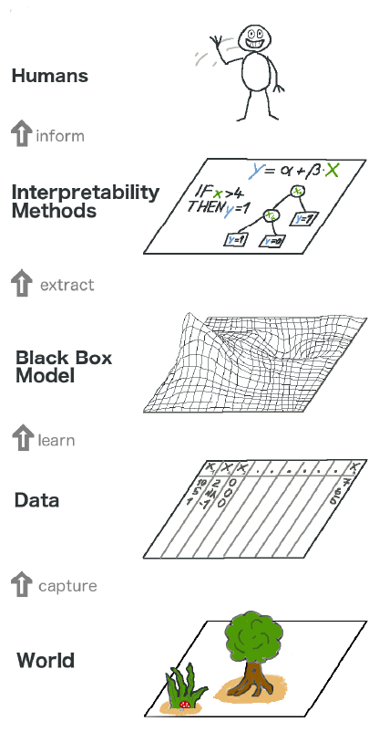
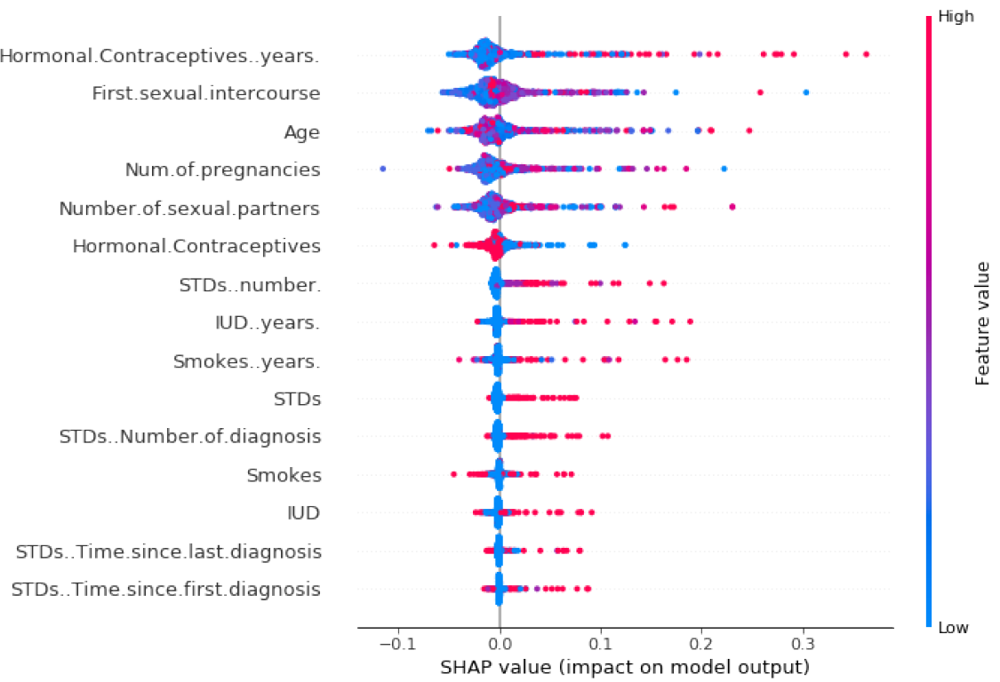
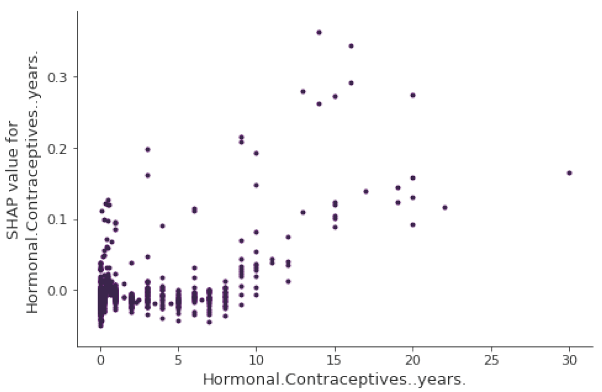

<!DOCTYPE html>


<html lang="zh-CN">
  

    <head>
      <meta charset="utf-8" />
        
      <meta
        name="viewport"
        content="width=device-width, initial-scale=1, maximum-scale=1"
      />
      <title>可解释的机器学习 |  墨冰的博客</title>
  <meta name="generator" content="hexo-theme-ayer">
      
      <link rel="shortcut icon" href="/favicon.ico" />
       
<link rel="stylesheet" href="/dist/main.css">

      <link
        rel="stylesheet"
        href="https://cdn.jsdelivr.net/gh/Shen-Yu/cdn/css/remixicon.min.css"
      />
      
<link rel="stylesheet" href="/css/custom.css">
 
      <script src="https://cdn.jsdelivr.net/npm/pace-js@1.0.2/pace.min.js"></script>
       
 

      <link
        rel="stylesheet"
        href="https://cdn.jsdelivr.net/npm/@sweetalert2/theme-bulma@5.0.1/bulma.min.css"
      />
      <script src="https://cdn.jsdelivr.net/npm/sweetalert2@11.0.19/dist/sweetalert2.min.js"></script>

      <!-- mermaid -->
      
      <style>
        .swal2-styled.swal2-confirm {
          font-size: 1.6rem;
        }
      </style>
    <link href="https://cdn.bootcss.com/KaTeX/0.11.1/katex.min.css" rel="stylesheet" /></head>
  </html>
</html>


<body>
  <div id="app">
    
      
    <main class="content on">
      <section class="outer">
  <article
  id="post-可解释的机器学习"
  class="article article-type-post"
  itemscope
  itemprop="blogPost"
  data-scroll-reveal
>
  <div class="article-inner">
    
    <header class="article-header">
       
<h1 class="article-title sea-center" style="border-left:0" itemprop="name">
  可解释的机器学习
</h1>
 

      
    </header>
     
    <div class="article-meta">
      <a href="/2022/05/04/%E5%8F%AF%E8%A7%A3%E9%87%8A%E7%9A%84%E6%9C%BA%E5%99%A8%E5%AD%A6%E4%B9%A0/" class="article-date">
  <time datetime="2022-05-04T07:05:04.000Z" itemprop="datePublished">2022-05-04</time>
</a> 
  <div class="article-category">
    <a class="article-category-link" href="/categories/%E9%95%BF%E5%89%91%E8%90%BD%E6%9C%88%E5%85%89/">长剑落月光</a>
  </div>
  
<div class="word_count">
    <span class="post-time">
        <span class="post-meta-item-icon">
            <i class="ri-quill-pen-line"></i>
            <span class="post-meta-item-text"> 字数统计:</span>
            <span class="post-count">17.9k</span>
        </span>
    </span>

    <span class="post-time">
        &nbsp; | &nbsp;
        <span class="post-meta-item-icon">
            <i class="ri-book-open-line"></i>
            <span class="post-meta-item-text"> 阅读时长≈</span>
            <span class="post-count">63 分钟</span>
        </span>
    </span>
</div>
 
    </div>
      
    <div class="tocbot"></div>


  
    <div class="article-entry" itemprop="articleBody">
       
  <h1 id="前言">前言</h1>
<h2 id="什么是机器学习">什么是机器学习</h2>
<ul>
<li><p>机器学习是计算机基于数据做出和改进预测或行为的一套方法。</p></li>
<li><p>抽象方法</p>
<ul>
<li>步骤一：数据采集，越多越好。数据必须包含你要预测的结果以及要从中进行预测的其他信息。</li>
<li>步骤二：将这些信息输⼊机器学习算法。</li>
<li>步骤三：将新数据输⼊模型。将模型集成到产品或流程中。</li>
</ul></li>
</ul>
<h2 id="术语">术语</h2>
<ul>
<li>算法(Algorithm)是机器为达到特定目标而遵循的一组规则。</li>
<li>机器学习(Machine Learning)是一套方法，能够允许计算机从数据中学习，以做出和改进预测。</li>
<li>机器学习是从 “常规编程” (Normal Programming) 到 “间接编程”(Indirect Programming) 的一种范式转换，“常规编程” 是指所有指令都必须显式地提供给计算机，而“间接编程” 是通过提供数据来实现的。</li>
<li>学习器 (Learner) 或机器学习算法 (Machine Learning Algorithm) 是⽤来从数据中学习机器学习模型的程序。</li>
<li>黑盒模型 (Black Box Model) 是⼀个不揭⽰其内部机制的系统。在机器学习中，“黑盒模型”描述了通过查看参数 (例如深度神经⽹络的参数) 却无法理解的模型。黑盒的对立面有时被称为白盒 (White Box)，在本书中被称为可解释模型。模型无关的解释方法将机器学习模型视为⿊盒 (即使这些模型本身不是黑盒)。</li>
<li>可解释的机器学习 (Interpretable Machine Learning) 是指使机器学习系统的行为和预测对人类可理解的算法和模型。</li>
</ul>
<h1 id="可解释性">可解释性</h1>
<ul>
<li>可解释性是⼈们能够理解决策原因的程度。</li>
<li>可解释性是指⼈们能够⼀致地预测模型结果的程度。</li>
</ul>
<h2 id="可解释性的重要性">可解释性的重要性</h2>
<ul>
<li>了解 “为什么” 可以帮助你更多地了解问题、数据以及模型可能失败的原因。</li>
<li>机器的决策对人的生活影响越大，机器对它行为的解释就越重要。</li>
<li>科学的目标是获取知识，但是许多问题都是通过大数据集和黑盒机器学习模型来解决的。模型本身应该成为知识的来源，而不是数据。可解释性使得可以提取模型捕获的这些额外知识。</li>
<li>机器学习模型承担需要安全措施和测试的实际任务。</li>
<li>可解释性是机器学习模型中一种有效检测偏见的调试工具。</li>
<li>将机器和算法整合到日常生活中的过程需要可解释性，以增加社会认可度。</li>
<li>解释用于管理社交互动。通过创造某个事物的共同含义，解释者影响着解释的接收者的行为、情感和信念。</li>
<li>机器学习模型只有在可以解释时才能进行调试和审核。</li>
<li>确保机器学习能够解释决策，我们可以更容易检查的性质：
<ul>
<li>公平性 (Fairness)：确保预测是公正的，不会隐式或显式地其实受保护地群体。</li>
<li>隐私(Privacy):确保保护数据中地敏感信息。</li>
<li>可靠性(Reliability)或鲁棒性(Reliability)：确保输入地小变化不会导致预测发生剧烈变化。</li>
<li>因果关系 (Causality)：检查是否只找到因果关系。</li>
<li>信任(Trust)：人们更容易信任解释器决策地系统。</li>
</ul></li>
</ul>
<h2 id="可解释性方法的分类">可解释性方法的分类</h2>
<ul>
<li>本质的(Intrinsic)与事后的(Post-hoc)
<ul>
<li>本质的可解释性是指由于结构简单而被认为是可解释的机器学习模型。</li>
<li>事后可解释性是指模型训练后运用解释方法。</li>
</ul></li>
<li>解释方法的输出
<ul>
<li>特征概要统计量(Feature Summary Statistic)：为每个特征提供概要统计量以表现该特征的重要性。</li>
<li>特征概要可视化 (Feature Summary Visualization)：有些特征概要实际上只有在可视化的情况下才有意义（比如说图片）</li>
<li>模型内部(例如模型权重)(Model Internals)：例如用于分割特征的阈值。输出模型内部的可解释方法是特定于模型的。</li>
<li>数据点(Data Point)：通过返回已存在的或新创建的数据点使模型可解释。
<ul>
<li>反事实解释(Counterfactual Explanations)：为了解释对数据实例的预测，通过改变某些特征以改变预测结果，找到相似的数据点。</li>
<li>识别预测类的原型，输出新数据点的解释方法要求可以解释数据点本身.</li>
</ul></li>
<li>本质上可解释模型：使用可解释模型对黑盒模型进行近似。</li>
</ul></li>
<li>特定于模型(Model-specific)和模型无关(Model-agnostic)</li>
<li>局部(Local)与全局(Global)</li>
</ul>
<h2 id="可解释性范围">可解释性范围</h2>
<h3 id="算法透明度算法是如何创建模型的">算法透明度（算法是如何创建模型的？）</h3>
<ul>
<li>算法透明度是指算法如何从数据中学习模型，以及它可以学习到什么样的关系。</li>
<li>算法的透明度只需要对算法的了解，不需要对数据或学习模型的了解。</li>
</ul>
<h3 id="全局整体的模型可解释性训练好的模型如何进行预测">全局、整体的模型可解释性（训练好的模型如何进行预测？）</h3>
<ul>
<li>一旦能理解整个模型，就可以将模型描述为可解释的</li>
<li>要解释全局模型输出，需要训练好的模型、算法知识和数据。</li>
<li>基于对模型特征和每个学习部分的整体认知来理解模型如何做出决策
<ul>
<li>那些特征很重要</li>
<li>他们之间有什么样的交互作用</li>
<li>全局的模型可解释性有助于基于特征理解目标结果的分布</li>
</ul></li>
<li>通常人们视图理解一个模型时，只考虑其中的一部分</li>
</ul>
<h3 id="模块层面上的全局模型可解释性模型的某些部分如何影响预测">模块层面上的全局模型可解释性（模型的某些部分如何影响预测？）</h3>
<ul>
<li>全局模型可解释性通常是无法达到的，通常在模块层面上理解某些模型。</li>
<li>并非所有模型都可以在参数级别上解释
<ul>
<li>对于线性模型，可解释部分是权重</li>
<li>对于树来说，可解释部分是分裂节点和叶节点预测</li>
<li>权重仅在模型中其他特征的上下文中有意义</li>
</ul></li>
</ul>
<h3 id="单个预测的局部可解释性为什么模型会对一个实例做出某种预测">单个预测的局部可解释性（为什么模型会对一个实例做出某种预测？）</h3>
<ul>
<li>在局部上，预测只依赖于线性或单调的某些特征，而不是对它们有复杂的依赖性。</li>
<li>局部解释比全局解释更精准。</li>
</ul>
<h3 id="一组预测的局部可解释性为什么模型对一组实例进行特定的预测">一组预测的局部可解释性（为什么模型对一组实例进行特定的预测？）</h3>
<ul>
<li>多个实例的模型预测可以用全局模型解释方法或单个实例的解释来解释。</li>
<li>全局方法可以通过获取实例组，将其视为一个完整的数据集以及使用全局方法处理这个数据集。</li>
<li>也可以对每个实例使用单独的局部解释方法，然后为整个组列出其结果或对结果进行聚合。</li>
</ul>
<h2 id="可解释性评估">可解释性评估</h2>
<ul>
<li>应用级评估 (实际任务) (Application Level Evaluation)
<ul>
<li>将解释放入产品中，由最终用户进行测试</li>
<li>需要一个良好的实验装置和对如何评估质量的理解</li>
<li>人类在解释相同决策时的表现是很好的基准</li>
</ul></li>
<li>人员级评估 (简单任务) (Human Level Evaluation)
<ul>
<li>简化的应用级评估，由非专业人员进行</li>
<li>使实验更加廉价，能更容易找到更多的测试人员</li>
</ul></li>
<li>功能级评估 (代理任务) (Function Level Evaluation)
<ul>
<li>不需要人工</li>
<li>当所使用的模型类已经由其他人在人员级评估进行评估时，是有效的</li>
<li>例如各种指标</li>
</ul></li>
</ul>
<h2 id="解释的性质">解释的性质</h2>
<ul>
<li>解释(Explanation)通常以一种人类可理解的方式将实例的特征值与其模型预测联系起来</li>
<li>解释方法的性质
<ul>
<li>表达能力(Expressive Power):
<ul>
<li>解释方法能够产生的解释的语言或结构</li>
<li>解释方法可以是生成IF-THEN规则、决策树、加权和、自然语言或其他东西</li>
</ul></li>
<li>半透明(Translucency):
<ul>
<li>描述了解释方法依赖于查看机器模型的程度、</li>
<li>依赖于本质上可解释模型(例如线性回归)的解释方法是高度透明的</li>
<li>仅依赖于修改输入和观察预测的半透明度为零</li>
<li>高半透明度的优点是该方法可以依赖更多的信息来生成解释</li>
<li>低半透明的优点是解释易于移植</li>
</ul></li>
<li>可移植性(Portability):
<ul>
<li>描述使用解释方法的机器学习模型的范围</li>
</ul></li>
<li>算法复杂度(Algorithmic Complexity):
<ul>
<li>描述了生成解释的方法的计算复杂度</li>
</ul></li>
</ul></li>
<li>单个解释的性质
<ul>
<li>准确性(Accuracy)：
<ul>
<li>解释预测看不见的数据会如何</li>
<li>解释代替机器模型进行预测的准确性</li>
</ul></li>
<li>保真度(Fidelity)：
<ul>
<li>解释对黑盒模型预测的近似程度如何</li>
<li>一些解释只提供局部保真度，意味着该解释仅非常适合于数据子集的模型预测</li>
</ul></li>
<li>一致性(Consistency)：
<ul>
<li>经过相同任务训练并产生相似预测的模型之间的解释有多少不同</li>
<li>如果两个模型使用不同特征却得到相似的预测，高度一致性是不可取的</li>
</ul></li>
<li>稳定性(Stability)：
<ul>
<li>类似实例之间的解释有多相似</li>
<li>稳定性是同一模型相似实例之间的解释稳定性</li>
</ul></li>
<li>可理解性(Comprehensibility)：
<ul>
<li>人类对解释的理解程度如何</li>
<li>测量可理解性的想法包括测量解释的大小或测试人们如何从解释中预测机器学习模型的行为</li>
</ul></li>
<li>确定性(Certainty)：
<ul>
<li>解释是否反映了机器学习模型的确定性</li>
<li>许多模型只给出预测，而没有关于预测正确的模型置信度的描述</li>
</ul></li>
<li>重要程度(Degree of Importance)：
<ul>
<li>解释多大程度上反映了解释的特征或部分的重要性</li>
<li>如果生成决策规则作为单个预测的解释，那么是否清楚该规则的哪个条件最重要。</li>
</ul></li>
<li>新颖性(Novelty)：
<ul>
<li>解释是否反映了待解释的数据实例来自远离训练数据分布的新区域</li>
<li>新颖性越高，由于缺乏数据，模型的确定性就越低</li>
</ul></li>
<li>代表性(Representativeness)：
<ul>
<li>一个解释能覆盖多少个实例</li>
</ul></li>
</ul></li>
</ul>
<h2 id="人性化的解释">人性化的解释</h2>
<ul>
<li>人类更喜欢简短的解释(只有1-2个原因)</li>
<li>解释是解释者与被解释者之间的社会互动，社会背景对解释的实际内容有很大的影响</li>
<li>预测或行为的所有因素的解释：完整的因果归因</li>
</ul>
<h3 id="什么是解释">什么是解释</h3>
<ul>
<li>解释是“为什么”这个问题的答案</li>
<li>解释(Explanation)一词是指解释的社会和认知过程，也指这些过程的产物。</li>
<li>解释者(Explainer)可以是人或机器</li>
</ul>
<h3 id="什么是好的解释">什么是好的解释</h3>
<ul>
<li><p>解释具有对比性</p>
<ul>
<li>人们通常不会问为什么会做出某种预测，但会问为什么会做出这种预测而不是另一种预测。</li>
<li>最好的解释是强调感兴趣的对象和参照对象之间最大的差异</li>
<li>人类不希望对预测有一个完整的解释，而是希望将不同之处与另一个实例的预测进行比较</li>
<li>自动创建对比性解释的解决方案还肯涉及在数据中寻找原型</li>
</ul></li>
<li><p>选择性的解释</p>
<ul>
<li>人们不希望对涵盖事件的实际原因和完整原因进行解释</li>
<li>人们习惯于从各种可能的原因中选择一个或两个原因作为解释</li>
<li>一个事件可以由各种原因解释，为什么做出了某种预测也可能由不止一个选择性的解释</li>
</ul></li>
<li><p>解释是社会性的</p>
<ul>
<li>解释是解释者和解释的接收者之间的交互</li>
<li>社会背景决定了解释的内容和性质</li>
</ul></li>
<li><p>解释的重点是异常</p>
<ul>
<li>人们更关注异常原因来解释事件</li>
<li>如果一个预测的输入是异常的，并影响了预测，那么它应该将其包括在解释中</li>
</ul></li>
<li><p>解释是真实地</p>
<ul>
<li>良好地解释是真实的，但不是“好的”解释的重要因素</li>
<li>选择性似乎比真实性更重要</li>
<li>解释应该尽可能真实地预测事件</li>
<li>对人类来说，解释地保真度不如它的选择性、对比性和社会性重要</li>
</ul></li>
<li><p>好的解释与被解释者地先验知识是一致的</p>
<ul>
<li>人们往往忽视与他们先验知识不一致的信息，这种效应被称为确认偏差</li>
<li>这种偏差不可避免，人们往往会贬低或忽视与他们先验知识不一致的解释</li>
<li>先验知识因人而异</li>
<li>群体可能存在共同的先验知识</li>
<li>好的解释与先验知识是一致的</li>
</ul></li>
<li><p>好的解释是普遍性和很可能的</p>
<ul>
<li><p>可以普遍解释很多事件的解释可以被认为是一个好的解释</p></li>
<li><p>与异常原因能够做出好的解释说法矛盾</p>
<ul>
<li>作者认为 异常原因胜过普遍原因</li>
<li>在给定情况下，异常原因是罕见的，在没有异常事件的情况下，普遍性的解释被认为是一个好解释</li>
<li>人们往往会误判共同事件的可能性</li>
</ul></li>
<li><p>普遍性可以很容易通过特征的支持来衡量</p></li>
</ul></li>
</ul>
<h1 id="可解释的模型">可解释的模型</h1>
<table>
<thead>
<tr class="header">
<th style="text-align: center;">算法</th>
<th style="text-align: center;">线性</th>
<th style="text-align: center;">单调</th>
<th style="text-align: center;">交互</th>
<th style="text-align: center;">任务</th>
</tr>
</thead>
<tbody>
<tr class="odd">
<td style="text-align: center;">线性回归</td>
<td style="text-align: center;">是</td>
<td style="text-align: center;">是</td>
<td style="text-align: center;">否</td>
<td style="text-align: center;">回归</td>
</tr>
<tr class="even">
<td style="text-align: center;">逻辑回归</td>
<td style="text-align: center;">否</td>
<td style="text-align: center;">是</td>
<td style="text-align: center;">否</td>
<td style="text-align: center;">分类</td>
</tr>
<tr class="odd">
<td style="text-align: center;">决策树</td>
<td style="text-align: center;">否</td>
<td style="text-align: center;">部分</td>
<td style="text-align: center;">是</td>
<td style="text-align: center;">分类；回归</td>
</tr>
<tr class="even">
<td style="text-align: center;">RuleFit</td>
<td style="text-align: center;">是</td>
<td style="text-align: center;">否</td>
<td style="text-align: center;">是</td>
<td style="text-align: center;">分类；回归</td>
</tr>
<tr class="odd">
<td style="text-align: center;">朴素贝叶斯</td>
<td style="text-align: center;">否</td>
<td style="text-align: center;">是</td>
<td style="text-align: center;">否</td>
<td style="text-align: center;">分类</td>
</tr>
<tr class="even">
<td style="text-align: center;">k-最近邻</td>
<td style="text-align: center;">否</td>
<td style="text-align: center;">否</td>
<td style="text-align: center;">否</td>
<td style="text-align: center;">分类；回归</td>
</tr>
</tbody>
</table>
<h2 id="线性回归">线性回归</h2>
<ul>
<li>线性回归(Linear Regression)将目标预测为特征输入的加权和</li>
<li>所学关系的线性使解释变得容易</li>
<li>线性回归模型的线性特点使估计过程变得简单</li>
<li>线性方程在模块化水平上具有易于解释的理解</li>
<li>模型是否为正确的模型取决于数据中的关系是否满足某些假设
<ul>
<li>线性
<ul>
<li>线性回归使预测成为特征的线性组合</li>
<li>线性易于量化和描述，它们可加并容易分离</li>
</ul></li>
<li>正态性
<ul>
<li>假设给定的目标结果服从正态分布</li>
<li>若违反此假设，则特征权重的估计置信区间无效</li>
</ul></li>
<li>同方差性
<ul>
<li>假设误差项的方差在整个特征空间内是恒定的</li>
<li>该假设在现实中经常被违背
<ul>
<li>现实中由于不同值的不同意义，误差常常不同</li>
<li>如不同大小的房屋价格估计误差常常不同</li>
</ul></li>
</ul></li>
<li>独立性
<ul>
<li>假设每个实例独立于其他实例</li>
<li>如果存在相关关系，需要使用特殊的模型，否则会的出错误的结论</li>
</ul></li>
<li>固定特征
<ul>
<li>输入特征被认为是固定的</li>
<li>固定意味着它们被视为给定常数，而不是统计向量，意味着它们没有测量误差</li>
</ul></li>
<li>不存在多重共线性
<ul>
<li>不需要强相关的特征，这回扰乱对权重的估计</li>
<li>在两个特征强相关的情况下，由于特征效应是累加的，估计权重变得困难，无法确定哪一个相关特征归因了效应</li>
</ul></li>
</ul></li>
</ul>
<h3 id="解释">解释</h3>
<ul>
<li>线性回归模型中权重的解释取决于相应特征的类型
<ul>
<li>数值特征：将数值特征增加一个单位会根据其权重改变估计结果</li>
<li>二分类特征：每个实例都采用两个可能值之一的特征。该特征从参照类型更改为其他类型会根据特征的权重改变估计结果</li>
<li>具有多个类别的分类特征：具有固定数量的可能值特征</li>
<li>截距项β：截距是“常量特征”的特征权重，对于所有实例都是1。结局的解释通常不相关。</li>
</ul></li>
<li>数值特征的解释
<ul>
<li>当其他特征保持不变时，特征x每增加一个单位，预测结果y增加z</li>
</ul></li>
<li>分类特征的解释
<ul>
<li>当所有其他特征保持不变时，特征x参照类别改变为其他类别时，预测结果y增加z</li>
<li>R-平方度量(R-squared Measurement)
<ul>
<li>该指标表现了模型解释了目标结果的总方差中的多少</li>
<li>该指标越高，模型对数据的解释就越好</li>
<li>R^2 = 1 - SSE/SST
<ul>
<li>SSE 为误差项的平方和
<ul>
<li>表现拟合线性模型还有多少方差</li>
</ul></li>
<li>SST 是数据方差的平方和
<ul>
<li>目标结果的总方差</li>
</ul></li>
</ul></li>
<li>优化后的R-平方
<ul>
<li>Ro^2 = 1 - ( 1 - R^2 )( n - 1)/( n - p - 1)
<ul>
<li>p为特征的数量</li>
<li>n为实例的数量</li>
</ul></li>
<li>考虑了模型中的特征数量</li>
<li>解释一个调整后的R平方很低的模型是没有意义的，因为这样的模型基本上不能解释大部分的方差</li>
</ul></li>
<li>特征重要性
<ul>
<li>线性回归模型中的某个特征重要性可以用它的 t-统计量(t-statistic)的绝对值衡量</li>
<li>t-统计量是以标准差为尺度的估计权重
<ul>
<li>t = β / SE(β)</li>
</ul></li>
<li>特征的重要性随着权重的增加而增加</li>
<li>估计权重的方差越大，特征越不重要</li>
</ul></li>
</ul></li>
</ul></li>
</ul>
<h3 id="可视化解释">可视化解释</h3>
<ul>
<li>权重图 (Weight Plot)
<ul>
<li>权重表中的权重和方差估计可以在权重图中可视化</li>
</ul></li>
<li>效应图 (Effect Plot)
<ul>
<li>当线性回归模型的权重与实际特征值相乘时，可以更有意义地进行分析</li>
<li>权重取决于特性地比例</li>
<li>特征效应
<ul>
<li>effect = w * x （权重 * x）</li>
</ul></li>
</ul></li>
</ul>
<h3 id="解释单个实例预测">解释单个实例预测</h3>
<ul>
<li>计算单个实例地特征对预测有多大贡献</li>
<li>特定实例地特征效应地解释仅与各个特征地特征效应分布相比较才有意义</li>
</ul>
<h3 id="分类特征的编码"><a target="_blank" rel="noopener" href="https://stats.oarc.ucla.edu/r/library/r-library-contrast-coding-systems-for-categorical-variables/">分类特征的编码</a></h3>
<ul>
<li>Treatment Coding
<ul>
<li>每个类别的权重是对应类别和参照类别之间预测估计插值</li>
<li>第一列是截距</li>
<li>第二列是实例是否在B类中</li>
<li>第三列是实例是否再C类中</li>
</ul></li>
<li>Effect Coding
<ul>
<li>每个类别的权重是从相应类别到总体均值的估计y值的差</li>
<li>第一列用于估计截距，用β0表示总体均值</li>
<li>第二列的权重表示总体均值与B类之间的差异
<ul>
<li>B类的总体效应为β0+β1</li>
</ul></li>
<li>第三列C同理</li>
</ul></li>
<li>Dummy coding
<ul>
<li>每个类别的β是这个类别y的估计均值</li>
</ul></li>
</ul>
<h3 id="线性模型是否有很好的解释">线性模型是否有很好的解释</h3>
<ul>
<li>线性模型并不能创建最佳解释</li>
<li>线性模型是对比性的，但是参照是构造的一个数据点，其中所有数值特征都为零</li>
<li>分类特征设置为它们的参照类别，不太可能出现再真实数据或现实中</li>
<li>只有再所有数值特征均以均值为中心，并且所有分类特征都是Effect Coding的，参照实例就是所有特征取平均特征值的数据点</li>
</ul>
<h3 id="稀疏线性模型">稀疏线性模型</h3>
<h4 id="lasso">Lasso</h4>
<ul>
<li>Lasso是一种将稀疏性引入线性回归模型的自动渐变方法</li>
<li>Lasso代表 最小绝对收缩和选择算子</li>
<li>Lasso为优化问题添加了特征向量的L1范数</li>
</ul>
<figure>
<figcaption aria-hidden="true">Lasso优化目标</figcaption>
</figure>
<ul>
<li>使用L1范数会使部分权重的估计值为0，其他权重的估计值缩小</li>
</ul>
<h4 id="其他线性模型稀疏方法">其他线性模型稀疏方法</h4>
<ul>
<li>预处理方法
<ul>
<li>手动选择特征：使用专家知识选择或放弃某些特征</li>
<li>单变量选择</li>
</ul></li>
<li>分布方法
<ul>
<li>向前选择：
<ul>
<li>用一个特征拟合线性模型，对每个特征都执行此操作</li>
<li>选择最有效的模型</li>
<li>对于其余的特征，通过将每个特征添加到当前的最佳模型中来拟合模型的不同版本，选择最好的一个</li>
<li>重复操作，直到达到条件，例如最大特征数</li>
</ul></li>
<li>向后选择
<ul>
<li>从包含所有特征的模型开始</li>
<li>尝试删除某个特征以达到性能最大程度的提高</li>
<li>重复操作直至达到某个条件</li>
</ul></li>
</ul></li>
</ul>
<h3 id="优点">优点</h3>
<ul>
<li>将预测建模为一个加权和，使预测的生成变得透明</li>
<li>在许多地方预测和推理都被接受</li>
<li>有很高水平的集体经验和专业知识</li>
<li>估计权重很简单，可以保证找到最佳权重</li>
<li>与权重一起，还可以得到置信区间，检验和可靠的统计理论</li>
</ul>
<h3 id="缺点">缺点</h3>
<ul>
<li>线性回归模型只能表示线性关系</li>
<li>每一个非线性或交互都必须是人工构成的</li>
<li>线性模型的预测性能通常不好</li>
<li>权重的解释可能不直观</li>
<li>完全相关的特征可能找不到线性方程的唯一解</li>
<li>相关性太强时，线性方程变得不稳定</li>
</ul>
<h2 id="逻辑回归">逻辑回归</h2>
<ul>
<li>逻辑回归(Logistic Regression)建模有两个可能结果的概率分类问题，它是针对分类问题的线性回归模型的扩展</li>
</ul>
<h3 id="线性回归用于分类有什么问题">线性回归用于分类有什么问题</h3>
<ul>
<li><p>线性模型不输出概率，但他将类视为数字（0和1），并拟合最佳超平面，以最小化点和超平面之间的距离。它只是在点之间插值，并不能把它解释为概率。</p></li>
<li><p>由于预测的结果不是概率，而是点与点之间的线性插值，没有一个有意义的阈值可以用来区分一个类和另一个类。<a target="_blank" rel="noopener" href="https://stats.stackexchange.com/questions/22381/why-not-approach-classification-through-regression">[Stackoverflow]</a></p></li>
<li><p>线性模型不能扩展到居于偶多个类的分类问题。</p></li>
</ul>
<h3 id="理论">理论</h3>
<ul>
<li>逻辑回归不是拟合直线或超平面，而是使用逻辑函数将线性方程的输出挤压到0到1之间。<span class="math inline">\(logistic(n) = \frac{1}{1+exp(-\eta)}\)</span></li>
</ul>
<h3 id="解释-1">解释</h3>
<ul>
<li><p>odds被称为几率，指时间发生概率除以事件不发生概率</p></li>
<li><p><span class="math inline">\(\frac{odds_{x_j+1}}{odds} = \frac{exp(\beta_0+\beta_1x_1+...\beta_j(x_j+1)+...+\beta_px_p}{exp(\beta_0+\beta_1x_1+...\beta_jx_j+...+\beta_px_p}\)</span></p></li>
<li><p><span class="math inline">\(\frac{odds_{x_j+1}}{odds} = exp(\beta_j(x_j+1)-\beta_jx_j) = exp(\beta_j)\)</span></p></li>
<li><p>数值特征：如果你将特征<span class="math inline">\(x_j\)</span>增加一个单位，则估计的几率将乘以因子<span class="math inline">\(exp(\beta_j)\)</span></p></li>
<li><p>二分类特征：只取两种可能指的特征，其以是参照类别。将特征<span class="math inline">\(x_j\)</span>从参照类别更改为其他类别，则估计的几率将乘以因子<span class="math inline">\(exp(\beta_j)\)</span></p></li>
<li><p>截距项<span class="math inline">\(\beta_0\)</span>：所有数字特征为零和分类特征为参照类别，则估计的几率是<span class="math inline">\(exp(\beta_0)\)</span>。截距的解释通常不相关。</p></li>
</ul>
<h3 id="优缺点">优缺点</h3>
<ul>
<li><p>逻辑回归的解释更加困难，权重的解释是乘法而不是加法</p></li>
<li><p>逻辑回归可能受到完全分离(Complete Separation)的影响。</p>
<ul>
<li><p>如果有一个特征能够将两个类完全分开，那么逻辑回归模型就不能再被训练了。</p></li>
<li><p>该特征的权重不会首先，因为最佳权重将是无限的</p></li>
</ul></li>
<li><p>逻辑回归模型不仅是一个分类模型，而且还给出概率。</p></li>
</ul>
<h2 id="flmgam和其他模型">FLM,GAM和其他模型</h2>
<ul>
<li><p>广义线性模型(Generalized Linear Models, GLMs)</p>
<ul>
<li>解决给定特征目标结果y不遵循高斯分布问题</li>
</ul></li>
<li><p>广义加性模型(Generalized Additive Models, GAMs)</p>
<ul>
<li>解决特征和y之间的真实关系不是线性的问题</li>
</ul></li>
</ul>
<h3 id="非高斯输出结果---glm">非高斯输出结果 - GLM</h3>
<ul>
<li><p>核心概念：保留特征的加权和，但允许非高斯结果分布，并通过可能的非线性函数连接该分布的期望均值与加权和。</p></li>
<li><p>经典线性模型被看作GLM的一个特例，经典线性模型中高斯分布的连接函数是一个简单的恒等函数。高斯分布由均值和方差进行参数化。均值描述了期望均值，方差则描述了在均值上下值的变化程度。<a target="_blank" rel="noopener" href="https://en.wikipedia.org/wiki/Exponential_family#Table_of_distributions">[指数族分布表]</a></p></li>
<li><p>在GLM框架下，这个概念推广到任意分布和任意连接函数。</p></li>
</ul>
<h3 id="交互">交互</h3>
<ul>
<li><p>线性回归模型假设一个特征的效应是保持相同的，与其他特征的值无关。</p></li>
<li><p>在拟合线性模型之前，在特征矩阵中添加一列，表示特征之间的交互，并像往常一样拟合模型。</p></li>
</ul>
<h3 id="非线性效应-gam">非线性效应-GAM</h3>
<ul>
<li><p>非线性关系建模</p>
<ul>
<li><p>特征转换（如对数）</p></li>
<li><p>特征分类</p></li>
<li><p>广义加性模型（GAM）</p>
<ul>
<li>假定关系可以由每个特征的任意函数的和建模结果</li>
</ul></li>
</ul></li>
</ul>
<h3 id="优点-1">优点</h3>
<ul>
<li><p>线性模型具有广泛的应用，并被许多社区认为是建模的现状</p></li>
<li><p>除了进行预测之外，还可以使用模型进行推断，得出有关数据的结论；并可以得到权重的置信区间、显著性检验、预测区间。</p></li>
</ul>
<h3 id="缺点-1">缺点</h3>
<ul>
<li><p>线性模型的大多数修改都会使模型的解释性变差。</p></li>
<li><p>GLM、GAM等依赖于有关数据生成的假设，如果违反了这些假设，则对权重的解释不再有效。</p></li>
</ul>
<h2 id="决策树">决策树</h2>
<ul>
<li><p>线性回归和逻辑回归在特征与结果之间的关系为非线性或特征交互的情况下会失败。</p></li>
<li><p>基于树的模型根据特征中的某些截断值多次分割数据。</p></li>
<li><p>通过分割，创建数据集的不同子集，每个实例都属于一个自己。</p></li>
<li><p>为了预测每个叶节点的结果，使用该节点中训练数据的平均结果。</p></li>
</ul>
<h3 id="解释-2">解释</h3>
<ul>
<li>从根节点开始，转到下一个节点，边表明要查看的子集。一旦到达叶节点，该节点将表明预测的结果。</li>
</ul>
<h4 id="特征重要性">特征重要性</h4>
<ul>
<li><p>决策树中特征的总体重要性计算方式：</p>
<ul>
<li><p>遍历使用该特征的所有分割，测量它相对于父节点减少了多少方差或基尼指数。</p></li>
<li><p>所有重要性的综合被缩放为100，每个重要性可以解释为总体模型重要性的一部分</p></li>
</ul></li>
</ul>
<h4 id="树分解">树分解</h4>
<ul>
<li><p>通过将决策路径分解为每个特征的组成，可以解释决策树的单个预测</p></li>
<li><p>可以通过树跟踪决策，并通过在每个决策节点上添加的贡献来解释预测</p></li>
</ul>
<h3 id="优点-2">优点</h3>
<ul>
<li><p>树结构非常适合捕获数据中特征之间的交互</p></li>
<li><p>数据最终被分成不同的组，不线性回归中多维超平面上的点容易理解</p></li>
<li><p>树结构由一个自然的可视化，包括它的节点和边</p></li>
<li><p>不需要转换特征</p></li>
</ul>
<h3 id="缺点-2">缺点</h3>
<ul>
<li><p>树不能处理线性关系。输入特征和结果之间的任何线性关系都必须能通过分割来近似，从而创建一个阶跃函数。</p>
<ul>
<li><p>缺乏平滑度</p></li>
<li><p>不稳定</p></li>
<li><p>终端节点的数量随深度的增加而迅速增加</p></li>
</ul></li>
</ul>
<h2 id="决策规则">决策规则</h2>
<ul>
<li><p>决策规则是一个简单的IF-THEN语句，由条件和预测组成。</p></li>
<li><p>决策规则可能是最容易解释的预测模型。</p></li>
<li><p>决策规则的有用性通常概括为两个数字：支持度(Support)和准确性(Accuracy)</p>
<ul>
<li><p>规则的支持度或覆盖度：规则条件适用的实例所占的百分比称为支持度</p></li>
<li><p>规则的准确性或置信度：规则的准确性是衡量规则在规则条件适用的实例预测正确类别时的准确性的指标。</p></li>
</ul></li>
<li><p>组合多个规则的两种主要策略</p>
<ul>
<li><p>决策列表</p>
<ul>
<li><p>决策列表向决策规则引入有序</p></li>
<li><p>如果第一条规则对实例的条件为真，则使用第一条预测的规则</p></li>
<li><p>如果没有，转移到下一个规则</p></li>
<li><p>决策列表只返回适用列表第一个规则的预测来解决重叠规则的问题</p></li>
</ul></li>
<li><p>决策集</p>
<ul>
<li><p>决策集类似于规则的民主，只是有些规则困难有更高的投票权</p></li>
<li><p>当一些规则适用时，解释性可能会受到影响</p></li>
</ul></li>
</ul></li>
</ul>
<h3 id="从单个特征学习规则oner">从单个特征学习规则（OneR）</h3>
<ul>
<li><p>OneR选择一个包含有关感兴趣结果的最多信息的特征，并从该特征创建决策规则</p></li>
<li><p>算法实现</p>
<ul>
<li><p>选择适当的间隔离散化连续特征</p></li>
<li><p>对于每个特征</p>
<ul>
<li><p>在特征值和分类结果之间创建交叉表</p></li>
<li><p>对于特征的每个值，创建一个规则，预测具有此特定特征值的实例的最常见类别</p></li>
<li><p>计算特征规则的总误差</p></li>
</ul></li>
<li><p>选择总误差最小的特征</p></li>
</ul></li>
</ul>
<h3 id="顺序覆盖">顺序覆盖</h3>
<ul>
<li><p>顺序覆盖(Sequential Covering)是一个通用过程，它重复学习单个规则以创建一个决策列表，该决策离别哦按规则覆盖整个数据集。</p></li>
<li><p>算法思路</p>
<ul>
<li><p>首先，找到一个适用于某个数据点的好规划</p></li>
<li><p>栓除规则所覆盖的所有数据点</p></li>
<li><p>重复规则学习，在剩余的点删除覆盖的点，直到没有剩余的点或满足另一个停止条件为止</p></li>
<li><p>最后结果是一个决策列表</p></li>
</ul></li>
<li><p>重复规则学习和删除覆盖数据点的方法称为“变治法(separate-and-conquer)”</p></li>
<li><p>算法实现</p>
<ul>
<li><p>从一个空的列表<span class="math inline">\(rlist\)</span>开始</p></li>
<li><p>学习一个规则<span class="math inline">\(r\)</span></p></li>
<li><p>直到规则列表低于某个质量阈值</p>
<ul>
<li><p>将规则<span class="math inline">\(r\)</span>添加到<span class="math inline">\(rlist\)</span></p></li>
<li><p>删除规则<span class="math inline">\(r\)</span>覆盖的所有数据点</p></li>
<li><p>在剩余数据中学习其他的规则</p></li>
</ul></li>
<li><p>返回决策列表</p></li>
</ul></li>
<li><p>学习规则：束搜索(Beam Search)方法</p>
<ul>
<li><p>学习决策树(CART或其他树学习算法)</p></li>
<li><p>从根节点开始，递归地选择最纯地节点（具有较低地错误分类率）</p></li>
<li><p>终端节点地多数的类别用作规则的预测</p></li>
</ul></li>
</ul>
<h3 id="贝叶斯规则列表">贝叶斯规则列表</h3>
<ul>
<li><p>贝叶斯规则列表</p>
<ul>
<li><p>从数据中预先挖掘(pre-mind)频繁使用的模式，这些模式可用作决策规则的条件</p></li>
<li><p>从预先挖掘的规则中选择决策列表</p></li>
</ul></li>
</ul>
<h4 id="频繁模式的预先挖掘">频繁模式的预先挖掘</h4>
<ul>
<li><p>模式的频率是通过其在数据集中的支持度来测量</p></li>
<li><p><span class="math inline">\(Support(x_j=A)=\frac{1}{n}\sum_{i=1}^{n}{I(x^{(i)}_j=A)}\)</span></p>
<ul>
<li><span class="math inline">\(A\)</span>是特征值，<span class="math inline">\(n\)</span>是数据集中的数据点数量，<span class="math inline">\(I\)</span>是指示函数（如果实例<span class="math inline">\(i\)</span>的特征<span class="math inline">\(x_j\)</span>具有级别<span class="math inline">\(A\)</span>,则返回1，否则为0）</li>
</ul></li>
</ul>
<h4 id="学习贝叶斯规则列表">学习贝叶斯规则列表</h4>
<ul>
<li><p>BRL算法的目标是通过选择预先挖掘的条件来学习一个准确的决策列表，同时对规则较少、条件较短的列表进行优先级排序。</p></li>
<li><p>BRL建议的实现方法</p>
<ul>
<li><p>生成初始决策列表</p></li>
<li><p>通过添加，切换或删除规则来迭代地修改列表，确保列表遵循列表的后验分布</p></li>
<li><p>根据后验分布，从概率最高的采样列表中悬着决策列表</p></li>
</ul></li>
</ul>
<h3 id="优点-3">优点</h3>
<ul>
<li><p>IF-THEN规则很容易解释</p></li>
<li><p>决策规则可以像决策树那样具有表达能力，同时更紧凑</p></li>
<li><p>使用IF-THEN预测很快</p></li>
<li><p>决策规则对于输入特征的单调变换具有很强的鲁棒性</p></li>
<li><p>IF-THEN模型仅为模型选择相关特征</p></li>
<li><p>简单规则可以作为复杂算法的基线</p></li>
</ul>
<h3 id="缺点-3">缺点</h3>
<ul>
<li><p>IF-THEN集中研究分类问题，几乎完全忽略了回归</p></li>
<li><p>输入特征必须是分类的，如果使用数值特征，必须对他们进行分类</p></li>
<li><p>许多旧的规则学习算法容易过拟合，需要至少一些保护措施来防止过拟合。</p></li>
<li><p>在描述特征和输出之间的线性关系时，决策规则是不好的。</p></li>
</ul>
<h2 id="rulefit">RuleFit</h2>
<ul>
<li><p>RuleFit学习具有原始特征以及许多新特征（决策规则）的稀疏线性模型。</p></li>
<li><p>RuleFit从决策树自动生成这些特征。通过将分割的决策合并为规则，可以将通过树的每条路径转换为决策规则。节点预测被丢弃，决策规则中仅使用分割。</p></li>
</ul>
<h3 id="解释-3">解释</h3>
<ul>
<li><p>RuleFit最终会估计一个线性模型，因此其解释与常规线性模型的解释相同</p></li>
<li><p>区别是该模型具有从决策规则派生的新特征。</p></li>
<li><p>决策规则是二进制特征，值为1满足规则的所有条件，否则值为0.</p></li>
</ul>
<h3 id="理论-1">理论</h3>
<ul>
<li><p>RuleFit由两个部分组成：</p>
<ul>
<li><p>从决策树创建规则</p></li>
<li><p>以原始特征和新规则作为输入用线性模型拟合</p></li>
</ul></li>
<li><p>规则生成</p>
<ul>
<li><p>到树中节点的任意路径都可以转换为决策规则</p></li>
<li><p>任何树集成算法都可以用作RuleFit生成树</p></li>
</ul></li>
<li><p>稀疏线性模型</p>
<ul>
<li><p>对原始特征进行调整，是他们对异常值更加健壮</p></li>
<li><p>使用Lasso强制某些权重获得零估计</p></li>
</ul></li>
<li><p>特征重要性</p>
<ul>
<li><p>决策规则重要性公式 <span class="math inline">\(I_k = |\alpha_k|\cdot\sqrt{s_k(1-s_k)}\)</span></p>
<ul>
<li><p><span class="math inline">\(\alpha_k\)</span>是决策规则关联Lasso权重</p></li>
<li><p><span class="math inline">\(s_k\)</span>是数据中特征的支持度，即决策规则适用数据的百分比</p></li>
</ul></li>
</ul></li>
</ul>
<h3 id="优点-4">优点</h3>
<ul>
<li><p>RuleFit自动将特征交互添加到线性模型</p></li>
<li><p>RuleFit可以处理分类和回归任务</p></li>
<li><p>创建的规则易于解释，因为它们是二进制决策规则</p></li>
<li><p>对于单个实例，只有少数规则适用。提高了局部可解释性。</p></li>
<li><p>RuleFit提出了许多有用的诊断工具</p></li>
</ul>
<h3 id="缺点-4">缺点</h3>
<ul>
<li><p>RuleFit的可解释性醉着模型特征数量的增加而降低。</p></li>
<li><p>RuleFit仍然是一个线性模型，当有规则重叠时，会出现问题。</p></li>
</ul>
<h2 id="其他可解释模型">其他可解释模型</h2>
<h3 id="朴素贝叶斯分类器">朴素贝叶斯分类器</h3>
<ul>
<li><p>朴素贝叶斯分类器使用条件概率的贝叶斯定理</p></li>
<li><p>朴素贝叶斯分类器独立地计算每个特征的类概率。</p></li>
<li><p><span class="math inline">\(P(C_k|x)=\frac{1}{Z}P(C_k)\prod_{i=1}^nP(x_i|C_k)\)</span></p></li>
</ul>
<h3 id="k-最近邻">k-最近邻</h3>
<ul>
<li><p>k-最近邻方法可用于回归和分类，并将数据点的最近邻用于预测</p></li>
<li><p>较难解释</p></li>
</ul>
<h1 id="模型无关方法">模型无关方法</h1>
<ul>
<li><p>模型无关的解释方法相对于模型特定的解释方法的最大优势是它们的灵活性</p></li>
<li><p>当解释方法可以应用于任何模型时，机器学习开发人员可以自由使用他们喜欢的任意机器模型。</p></li>
<li><p>模型不可知的解释系统的理想特征：</p>
<ul>
<li><p>模型的灵活性：解释方法可以与任何机器学习模型一起使用</p></li>
<li><p>解释的灵活性：不限于某种形式的解释。在某些情况下线性公式可能会有用，在其他情况下，特征重要性的图形可能会有用。</p></li>
<li><p>表示方式的灵活性：解释系统应该能够使用与所解释模型不同的特征表示方式。</p></li>
</ul></li>
</ul>
<figure>
<figcaption aria-hidden="true">更大的图景</figcaption>
</figure>
<ul>
<li><p>更大的图景</p>
<ul>
<li><p>透过收集数据捕获世界，通过学习使用机器学习模型预测数据来进一步抽象世界。</p></li>
<li><p>可解释性帮助人们的理解更上一层</p></li>
</ul></li>
</ul>
<h2 id="部分依赖图">部分依赖图</h2>
<ul>
<li><p>部分依赖图(Partial Dependence Plot)显示了一个或两个特征对机器学习模型的预测结果的边际效应。</p></li>
<li><p>部分依赖函数<span class="math inline">\(f_{X_S}\)</span>通过计算训练数据的平均值来估算，称为蒙特卡洛方法</p>
<ul>
<li><p><span class="math inline">\(f_{x_S}=\frac{1}{n}\sum_{i=1}^nf(x_S,x_C^{(i)})\)</span></p></li>
<li><p>部分依赖函数告诉我们特征S的给定值对预测的平均边际效用是多少</p></li>
<li><p>部分依赖图假设感兴趣特征和其他特征不存在相关关系。</p></li>
</ul></li>
</ul>
<h3 id="优点-5">优点</h3>
<ul>
<li><p>部分依赖图计算直观，容易被非专业人士理解</p></li>
<li><p>如果认为i计算部分依赖图的特征与其他特征不相关，部分依赖图可以完美地表示该特征如何平均影响预测。</p></li>
<li><p>部分依赖图容易实现</p></li>
<li><p>部分依赖图地计算具有因果关系。通过干预一项特征并测量预测地变化，构建了特征与预测之间地因果关系。</p></li>
</ul>
<h3 id="缺点-5">缺点</h3>
<ul>
<li><p>部分依赖函数实际应用地最大特征数量为2</p></li>
<li><p>一些部分依赖图未显示特征分布。忽略分布可能会产生误导，因为可能会过度解释没有数据的区域。通过显示RUG或直方图可以轻松解决此问题。</p></li>
<li><p>独立性假设是部分依赖图最大的问题</p>
<ul>
<li><p>当特征关联时，部分依赖图会在特征分布区域中创建实际概率非常低的新数据点</p></li>
<li><p>解决的一种方法是适用于条件分布而非边际分布的累积局部效应图</p></li>
</ul></li>
<li><p>异质效应可能被隐藏</p>
<ul>
<li>多个特征可能会抵消影响从而得出特征没影响的结论</li>
</ul></li>
</ul>
<h2 id="个体条件期望">个体条件期望</h2>
<ul>
<li><p>个体条件期望(Individual Conditional Expectation)图为每个实例显示一条线。该线显示了特征更改时实例的预测如何改变</p></li>
<li><p>特征平均效应部分依赖图是一种全局方法，它不关注特定实例，而是关注整体平均。</p></li>
<li><p>实现</p>
<ul>
<li><p>保持所有其他特征相同，通过用网络中的值替换特征的值创建该实例的变体并用黑盒模型对这些新建的实例进行预测。</p></li>
<li><p>获得一组具有来自网络的特征值和相应预测的点</p></li>
</ul></li>
<li><p>中心化个体条件期望图(Centered ICE Plot)</p>
<ul>
<li>将曲线中心化于特征中的某个点，并仅显示到该点的预测差异</li>
</ul></li>
<li><p>倒数个体条件期望图(Derivative ICE Plot)</p>
<ul>
<li>曲线的倒数表达了是否发生变化以及变化方向</li>
</ul></li>
</ul>
<h3 id="优点-6">优点</h3>
<ul>
<li><p>相比于部分依赖图更加直观</p></li>
<li><p>可以揭示异质关系</p></li>
</ul>
<h3 id="缺点-6">缺点</h3>
<ul>
<li><p>只能有意义地显示一个特征</p></li>
<li><p>如果感兴趣地特征与其他特征相关联，线中地某些点可能是无效地数据点</p></li>
<li><p>大量地ICE曲线可能会使图过于拥挤</p></li>
</ul>
<h2 id="累积局部效应图">累积局部效应图</h2>
<ul>
<li><p>累积局部效应(Accumulated Local Effects Plot)描述了特征平均如何影响机器学习模型地预测。</p></li>
<li><p>ALE图是部分依赖图地更快、更无偏地替代方法</p></li>
</ul>
<h3 id="动机和直觉">动机和直觉</h3>
<ul>
<li>如果机器学习模型地特征相关，部分依赖图将不可信。</li>
<li>累积局部效应图通过基于特征的条件分布来计算差异从而避免将特征和其他所有相关特征的效应混合在一起。</li>
</ul>
<h3 id="理论-2">理论</h3>
<ul>
<li><p><span class="math inline">\(\hat{f}*{ {x_S},ALE}(x_S)=\int*{z_{0,1} }^{x_S}\int_{x_C}\hat{f}^S(z_s,x_c)P(x_C|z_S)dx_Cdz_S-constant\)</span></p></li>
<li><p>预测平均预测的变换，而不是预测本身</p></li>
<li><p>将变化定义为梯度(对于实际计算，替换为预测差异<span class="math inline">\(\hat{f}^S(x_s,x_c)=\frac{\delta\hat{f}(x_S,x_C)}{\delta x_S}\)</span>)</p></li>
</ul>
<h3 id="估计">估计</h3>
<ul>
<li><p>与数据的平均预测值相比，ALE值可以解释为某一特定值下特征的主要效应</p></li>
<li><p>特征分布的分位数用作定义间隔的网络。使用分位数可确保每个间隔中有相同数量的数据实例。</p></li>
<li><p>分位数的去点是间隔长度可能非常不同。如果感兴趣的特征非常偏斜，则可能会导致累积局部效应图出现异常。</p></li>
</ul>
<h4 id="用于两个特征交互的ale图">用于两个特征交互的ALE图</h4>
<ul>
<li><p>两个特征的ALE仅显示两个特征的附加交互效应</p></li>
<li><p>二阶效应是在考虑了特征的主要效应之后，特征的附加的交互效应。</p></li>
</ul>
<h4 id="ale用于分类特征">ALE用于分类特征</h4>
<ul>
<li><p>累积局部效应方法需要特征值具有顺序，因为该方法会演特定方向累积效应</p></li>
<li><p>为计算分类特征的ALE图，我们必须以某种方式创建或找到一个顺序。</p></li>
<li><p>类别的顺序会影响累积局部效应的计算和解释</p></li>
<li><p>基于其他特征根据类别的相似性对类别进行排序。</p></li>
<li><p>两类之间的距离是每个特征的距离之和</p></li>
<li><p>逐特征距离比较累两个类别中的累积分布，称为Kolmogorov-Smirnov距离</p></li>
<li><p>一旦有了所有类别之间的距离，便可以使用多维缩放将距离矩阵压缩为一维距离度量</p></li>
</ul>
<h3 id="优点-7">优点</h3>
<ul>
<li><p>ALE图是无偏的，在特征相关时它们仍然有效。</p></li>
<li><p>ALE绘图的计算速度比PDP更快，可以使用<span class="math inline">\(O(n)\)</span>进行缩放</p></li>
<li><p>ALE图的解释很清楚：在给定值的条件下，可以从ALE图中读取更改特征对预测的相对影响</p></li>
<li><p>ALE图以0为中心</p></li>
<li><p>ALE绘图仅显示交互作用</p></li>
</ul>
<h3 id="缺点-7">缺点</h3>
<ul>
<li><p>ALE图可能会变得有些不稳定。没有完美的解决方案来设置间隔的数量。</p></li>
<li><p>ALE图不附带ICE曲线</p></li>
<li><p>二阶ALE估计在整个特征空间中具有不同的稳定性，这是不以任何方式可视化的。</p>
<ul>
<li><p>对一个单元中局部效应的每次估计都是用不同数量的数据实例</p></li>
<li><p>所有估计都具有不同的准确性</p></li>
</ul></li>
<li><p>二阶效应图解释起来有点烦人</p>
<ul>
<li>必须牢记主要效应</li>
</ul></li>
<li><p>相比部分依赖图更加复杂且不直观</p></li>
<li><p>当特征强相关时，解释仍然困难</p></li>
</ul>
<h2 id="特征交互">特征交互</h2>
<ul>
<li>特征交互（Feature Interaction）：当特征在预测模型中交互时，预测不能表示为特征效应的总和，因为一个特征的效应取决于另一个特征的值。</li>
</ul>
<h3 id="特征交互-1">特征交互</h3>
<ul>
<li>如果机器学习模型基于两个特征进行预测，则可以将预测分解为四项：常量项、第一特征项，第二特征项以及两个特征间的交互项</li>
</ul>
<h3 id="理论弗里德曼的h统计量">理论：弗里德曼的H统计量</h3>
<ul>
<li><p>两种情况</p>
<ul>
<li><p>双向交互度量：模型中的两个特征是否交互以及在何种程度上交互</p></li>
<li><p>总体交互度量：某个特征在模型中是否与其他所有其他特征发生交互以及在何种程度上的交互</p></li>
</ul></li>
<li><p>特征<span class="math inline">\(j\)</span>和<span class="math inline">\(k\)</span>之间的交互作用提出的H统计量：</p>
<ul>
<li><p><span class="math inline">\(H^2_{jk}=\sum_{i=1}^n[PD_{jk}(x_j^{(i)},x_k^{(i)})-PD_j(x_j^{(i)})-PD_k(x_k^{(i)})]^2/\sum^n_{i=1}PD^2_{jk}(x_j^{(i)},x_k^{(i)})\)</span></p></li>
<li><p>如果完全没有交互，则统计量为0，如果用部分依赖函数之和解释了<span class="math inline">\(PD_{jk}\)</span>或<span class="math inline">\(\hat{f}\)</span>的所有方差，则统计为1.两个特征之间的交互统计为1表示每个PD函数都是常数，并且对预测的效应仅来自交互。</p></li>
<li><p>H统计量的评估成本很高，因为它会在所有数据点上进行迭代，并且必须在每个点评估部份依赖，而这又需要对所有n个数据点进行</p></li>
<li><p>如果预测是概率，则交互强度统计也可以应用于分类设置</p></li>
</ul></li>
</ul>
<h3 id="优点-8">优点</h3>
<ul>
<li><p>交互作用H统计量通过部分依赖分解具有理论基础</p></li>
<li><p>H统计量具有有意义的解释：交互作用定义为由交互作用解释的方差份额</p></li>
<li><p>由于统计信息是无量纲的，并总在0和1之间，因此它在各个特征甚至模型之间都具有可比性</p></li>
<li><p>统计信息会检测各种类型的交互</p></li>
<li><p>可以分析任意更高阶的交互作用</p></li>
</ul>
<h3 id="缺点-8">缺点</h3>
<ul>
<li><p>交互H统计量计算量很大</p></li>
<li><p>如果对点进行采样，估算值也因运行而异，结果可能不稳定</p></li>
<li><p>很难说H统计量何时足够大以至于可以认为交互足够强</p></li>
<li><p>H统计量可能大于1，难以解释</p></li>
<li><p>该技术对图像分类器没有用</p></li>
</ul>
<h3 id="替代方法">替代方法</h3>
<ul>
<li><p>变量交互网络(VIN)</p></li>
<li><p><a target="_blank" rel="noopener" href="https://github.com/koalaverse/vip">Variable Importance Plots</a></p></li>
</ul>
<h2 id="置换特征重要性">置换特征重要性</h2>
<ul>
<li>置换特征重要性（Permutation Feature Importance）衡量了对特征值进行置换后模型预测误差的增加，打破了特征与真实结果之间的联系</li>
</ul>
<h3 id="理论-3">理论</h3>
<ul>
<li><p>通过置换特征后计算模型的预测误差来衡量特征的重要性。</p></li>
<li><p>如果将特征值的改变会增加模型误差，则特征重要，因为模型依赖于该特征进行预测</p></li>
<li><p>实现</p>
<ul>
<li><p>计算原始误差：<span class="math inline">\(e^{orig}=L(y,f(X)\)</span></p></li>
<li><p>置换数据X中的特征j生成特征矩阵<span class="math inline">\(X^{perm}\)</span></p></li>
<li><p>估计误差<span class="math inline">\(e^{perm}=L(Y,f(X^{perm}))\)</span></p></li>
<li><p>计算置换特征重要性<span class="math inline">\(FI^j=e^{perm}/e^{orig}\)</span></p></li>
</ul></li>
</ul>
<h3 id="训练数据和测试数据的重要性">训练数据和测试数据的重要性</h3>
<h4 id="训练数据情况">训练数据情况</h4>
<ul>
<li><p>如果在训练模型的相同数据上测量模型误差，测量通常过于乐观，模型工作效果比实际情况好得多</p></li>
<li><p>基于训练数据的特征重要性使我们错误的认为对于预测很重要，而实际上模型只是过拟合而特征根本不重要</p></li>
</ul>
<h4 id="测试数据情况">测试数据情况</h4>
<ul>
<li><p>如果希望使用所有数据来训练模型，以最终获得可能的模型，没有声音未使用的测试数据来计算特征的重要性</p></li>
<li><p>评估模型泛化时，特征重要性不是在具有所有数据的最终模型上计算的，而是在具有可能表现不同的数据自己的模型上计算的</p></li>
</ul>
<h3 id="优点-9">优点</h3>
<ul>
<li><p>很好的解释：特征重要性是当特征信息被破坏时模型误差的增加</p></li>
<li><p>特征重要性提供了对模型行为高度压缩的、全局的洞悉</p></li>
<li><p>特征重要性度量是可比较的</p></li>
<li><p>重要性度量会自动考虑与其他特征的所有交互</p></li>
<li><p>置换特征重要性不需要重新训练模型</p></li>
</ul>
<h3 id="缺点-9">缺点</h3>
<ul>
<li><p>非常不清楚应该使用训练数据还是测试数据来计算特征的重要性</p></li>
<li><p>置换特征的重要性与模型的误差有关</p></li>
<li><p>需要真正的结果，如果仅提供模型和未标记的数据则无法计算</p></li>
<li><p>重复置换后，结果可能会有很大差异</p></li>
<li><p>如果特征是相关的，置换特征重要性可能会因不切实际的数据实例而有偏差</p></li>
<li><p>添加相关特征可以通过在两个特征之间拆分重要性降低关联特征的重要性</p></li>
</ul>
<h2 id="全局代理模型">全局代理模型</h2>
<ul>
<li>全局代理模型经过训练可近似于黑盒模型的预测。通过解释代理模型得出有关黑盒模型的结论</li>
</ul>
<h3 id="理论-4">理论</h3>
<ul>
<li><p>如果目标结果昂贵、耗时或难以衡量，则可以使用结果廉价、快速的代理模型。</p></li>
<li><p>可解释的代理模型目的是尽可能准确地近似底层模型地预测，并且可以同时进行解释</p></li>
<li><p>代理模型实现流程</p>
<ul>
<li><p>选择数据集X</p></li>
<li><p>对于选定地数据集X，获取黑盒模型地预测</p></li>
<li><p>选择一种可解释地模型</p></li>
<li><p>在数据集X及其预测上训练可解释模型</p></li>
<li><p>获得代理模型</p></li>
<li><p>衡量代理模型复制黑盒模型预测地效果</p></li>
<li><p>解释代理模型</p></li>
</ul></li>
<li><p>R-平方度量</p>
<ul>
<li><p>衡量代理复制黑盒模型地能力</p></li>
<li><p><span class="math inline">\(R^2=1-\frac{SSE}{SST}=1-\frac{\sum^n_{i=1}(\hat{y}_*^{(i)}-\hat{y}^{(i)})^2}{\sum^n_{i=1}(\hat{y}^{(i)}-\bar{\hat{y}})^2}\)</span></p></li>
<li><p><span class="math inline">\(\hat{y}_*^{(i)}\)</span>是代理模型地第i个实例的预测</p></li>
<li><p><span class="math inline">\(\hat{y}^{(i)}\)</span>是黑盒模型的预测</p></li>
<li><p><span class="math inline">\(\bar{\hat{y}}\)</span>是黑盒模型预测的平均值</p></li>
</ul></li>
</ul>
<h3 id="优点-10">优点</h3>
<ul>
<li><p>代理模型方式非常灵活</p></li>
<li><p>使用R-平方测量，可以轻松测量代理模型在逼近黑盒预测方面的表现</p></li>
</ul>
<h3 id="缺点-10">缺点</h3>
<ul>
<li><p>得出的是有关模型而不是数据的结论</p></li>
<li><p>尚不清楚R-平方的最佳截止点是什么，以便确信代理模型与黑盒模型足够接近</p></li>
<li><p>对于数据集的一个子集，可解释模型可能非常接近，而对于另一子集，则可能发生很大差异</p></li>
<li><p>受选择可解释的代理模型本身的所有优点和缺点</p></li>
<li><p>有人认为，一般而言，没有本质上可解释的模型</p></li>
</ul>
<h2 id="局部代理lime">局部代理(LIME)</h2>
<ul>
<li><p>局部代理模型本身是可解释的模型，用于解释黑盒机器学习模型的单个实例预测</p></li>
<li><p>LIME并非训练全局代理模型，而是转语音训练局部代理模型以解释单个预测</p></li>
<li><p>具有可解释性约束的局部代理模型：<span class="math inline">\(explanation(x)=arg min_{g\in G}L(f,g,\pi_x)+\Omega(g)\)</span></p>
<ul>
<li><p>对实例<span class="math inline">\(x\)</span>的解释模型是模型<span class="math inline">\(g\)</span></p></li>
<li><p>最小化损失<span class="math inline">\(L\)</span>测量了解释<span class="math inline">\(g\)</span>与原始模型<span class="math inline">\(f\)</span>的预测接近程度</p></li>
<li><p>模型复杂度<span class="math inline">\(\Omega(g)\)</span>保持较低水平</p></li>
</ul></li>
<li><p>训练局部代理模型</p>
<ul>
<li><p>选择对黑盒预测进行解释的感兴趣实例</p></li>
<li><p>扰动数据集并获得新点的黑盒预测</p></li>
<li><p>根据新样本与目标实例的接近程度进行加权</p></li>
<li><p>在新数据集上训练加权的可解释模型</p></li>
<li><p>通过解释局部模型来解释预测</p></li>
</ul></li>
</ul>
<h3 id="表格数据的lime">表格数据的LIME</h3>
<ul>
<li><p>使用指数平滑核来定义邻域</p></li>
<li><p>平滑核是一个函数，它接受两个数据实例并返回一个接近度(proximity measure)</p></li>
</ul>
<h3 id="文本的lime">文本的LIME</h3>
<ul>
<li>从原始文本开始，通过从原始文本中随机删除单词来创建新文本</li>
</ul>
<h3 id="图像的lime">图像的LIME</h3>
<ul>
<li><p>将图像分割成“超像素”并关闭和打开超像素创建图像的变化</p></li>
<li><p>超像素是具有相似颜色的互连像素，可以通过将每个像素替换为用户定义的颜色来关闭</p></li>
</ul>
<h3 id="优点-11">优点</h3>
<ul>
<li><p>即使替换了底层的机器学习模型，仍然可以使用相同的局部可解释模型进行解释</p></li>
<li><p>LIME是少数适用于表格数据，文本和图像的方法之一</p></li>
<li><p>保真度度量使我们很好地了解了可解释模型在解释感兴趣地数据实例附近地黑盒预测方向地可靠性</p></li>
<li><p>用局部代理模型创建的解释可以使用除原始模型所用以外的其他特征</p></li>
</ul>
<h3 id="缺点-11">缺点</h3>
<ul>
<li><p>当对表格式数据使用LIME时，正确定义邻域是一个很大的未解决问题</p></li>
<li><p>解释不稳定</p></li>
<li><p>以LIME作为具体实现的局部代理模型有非常有应用前景。但该方法仍处于开发阶段，需要解决许多问题才能安全应用。</p></li>
</ul>
<h2 id="shapley值">Shapley值</h2>
<ul>
<li>Shapley是联盟博弈论的一种方法，告诉我们如何在特征之间公平地分配总支出</li>
</ul>
<h3 id="总体思路">总体思路</h3>
<ul>
<li>Shapley值是所有可能地联盟中特征值地平均边际贡献</li>
</ul>
<h3 id="详细的shapley值">详细的Shapley值</h3>
<ul>
<li><p>Shapley定义：<span class="math inline">\(\phi_i(val)=\sum_{S\in\{x_1,...,x_p\}}\frac{|S|!(p-|S|-1)!}{p!}(val(S\cup\{x_j\})-val(S))\)</span></p></li>
<li><p>Shapley值是唯一满足效益性(Efficiency)，对称性(Symmetry)，虚拟性(Dummy)和可加性(Additivity)的归因方法</p>
<ul>
<li><p>效益性</p>
<ul>
<li><p>特征贡献之和等于x和平均值的预测差</p></li>
<li><p><span class="math inline">\(\sum^p_{j=1}\phi_j=\hat{f}(x)-E_X(\hat{f}(X))\)</span></p></li>
</ul></li>
<li><p>对称性</p>
<ul>
<li><p>如果两个特征值j和k对所有可能的联盟均贡献相同，则它们的贡献影响同</p></li>
<li><p>如果 <span class="math inline">\(val(S\cup\{x_j\})=val(S\cup\{x_k\})\)</span></p></li>
<li><p>对于所有 <span class="math inline">\(S\subseteq\{x_1,...,x_p\}\setminus\{x_j,x_k\}\)</span></p></li>
<li><p>那么 <span class="math inline">\(\phi_j=\phi_k\)</span></p></li>
</ul></li>
<li><p>虚拟性</p>
<ul>
<li><p>假设无论将特征值添加到哪个集合，都不会改变预测值的特征j，他的Shapley值应为0</p></li>
<li><p>如果 <span class="math inline">\(val(S\cup\{x_j\})=val(S)\)</span></p></li>
<li><p>对于所有 <span class="math inline">\(S\subseteq\{x_1,...,x_p\}\)</span></p></li>
<li><p>那么 <span class="math inline">\(\phi_j=0\)</span></p></li>
</ul></li>
<li><p>可加性</p>
<ul>
<li>可加性保证对于特征值，可以分别计算每部分的Shapley值，取平均值获得整体的Shapley值</li>
</ul></li>
<li><p>直觉</p>
<ul>
<li>特征值的Shapley值是当特征值加入时，已经存在联盟所收到的预测的平均变化</li>
</ul></li>
</ul></li>
</ul>
<h4 id="估算shapley值">估算Shapley值</h4>
<ul>
<li><p>Shapley基于蒙特卡洛抽样的近似值 <span class="math inline">\(\hat{\phi}_j=\frac{1}{M}\big(\hat{f}(x^m_{+j})-\hat{f}(x^m_{-j})\big)\)</span></p>
<ul>
<li><span class="math inline">\(x^m_{+j}\)</span>是x的预测，除了特征j的值，其他不在联盟内的特征值被来自随机数数据点z的特征值替换</li>
</ul></li>
</ul>
<h3 id="优点-12">优点</h3>
<ul>
<li><p>预测值与平均预测值之间的差异在实例的特征值(Shapley)之间的公平分配</p></li>
<li><p>Shapley值允许进行对比性解释</p></li>
<li><p>Shapley值是唯一具有扎实理论的解释方法</p></li>
</ul>
<h3 id="缺点-12">缺点</h3>
<ul>
<li><p>Shapley值计算需要大量时间。绝大多数只能使用近似的计算</p></li>
<li><p>Shapley值可能会被误解</p>
<ul>
<li><p>特征值的Shapley值不是从模型训练中删除特征后的预测值之差</p></li>
<li><p>给定当前的一组特征值，特征值对实际预测值与平均预测值之差的贡献就是估计的Shapley值</p></li>
</ul></li>
<li><p>如果寻求稀疏解释(包含很少特征的解释)，则Shapley值是错误的解释方法</p>
<ul>
<li>使用Shapley值方法创建的解释始终使用所有特征</li>
</ul></li>
<li><p>Shapley值为每个特征返回一个简单值，但没有像LIME这样的预测模型</p>
<ul>
<li>不能用于对输入变化的预测做出变化的陈述</li>
</ul></li>
<li><p>如果要计算新数据实例的Shapley值，则需要访问数据</p></li>
<li><p>Shapley值方法在特征相关时会遇到不现实的数据实例</p></li>
</ul>
<h2 id="shap">SHAP</h2>
<ul>
<li>SHAP(SHapley Additive ExPlanations)是一种解释个体预测的方法。SHAP基于博弈论上的最佳Shapley值</li>
</ul>
<h3 id="定义">定义</h3>
<ul>
<li><p>SHAP的目标是通过计算每个特征对预测x的贡献来解释实例x的预测</p></li>
<li><p>SHAP将Shapley值的解释表示为一种可加的特征归因方法</p></li>
<li><p>SHAP解释： <span class="math inline">\(g(z^\prime)=\phi_0+\sum^M_{j=1}\phi_jz^\prime_j\)</span></p>
<ul>
<li><p><span class="math inline">\(g\)</span>是解释模型</p></li>
<li><p><span class="math inline">\(z^\prime\in\{0,1\}^M\)</span>是联盟向量</p></li>
<li><p><span class="math inline">\(M\)</span>是最大联盟大小</p></li>
<li><p><span class="math inline">\(\phi_j\in R\)</span>是特征j的特征归因Shapley值</p></li>
</ul></li>
<li><p>SHAP理想性质</p>
<ul>
<li><p>局部准确性(Local accuracy)</p>
<ul>
<li>表示特征归因的总和等于我们要解释的模型的输出</li>
</ul></li>
<li><p>缺失性(Missingness)</p>
<ul>
<li>缺失性表示缺失特征的归因为零</li>
</ul></li>
<li><p>一致性(Consistency)</p>
<ul>
<li>如果模型发生变化，以使特征值的边际贡献增加或保持不变，则Shapley值也会增加或保持不变</li>
</ul></li>
</ul></li>
</ul>
<h3 id="kernelshap">KernelSHAP</h3>
<ul>
<li><p>KernelSHAP为一个实例x估算每个特征值对预测的贡献</p></li>
<li><p>算法流程</p>
<ul>
<li><p>采样联盟<span class="math inline">\(z^\prime_k\in\{0,1\}^M,k\in\{1,...,K\}\)</span>(1=联盟中存在特征，0=不存在特征)</p></li>
<li><p>对<span class="math inline">\(z^\prime_k\)</span>预测，方法是首先将<span class="math inline">\(z^\prime_k\)</span>转换为原始特征空间，应用模型<span class="math inline">\(f:f(h_x(z^\prime_k))\)</span></p></li>
<li><p>使用SHAP核计算每个<span class="math inline">\(z^\prime_k\)</span>的权重</p></li>
<li><p>拟合加权线性模型</p></li>
<li><p>返回Shapley值<span class="math inline">\(\phi_k\)</span>，即线性模型的系数</p></li>
</ul></li>
</ul>
<h3 id="treeshap">TreeSHAP</h3>
<ul>
<li>TressSHAP使用基于树的机器学习模型，计算速度很快，可以计算精确的Shapley值，并且在特征相关时可以正确估计Shapley值</li>
</ul>
<h3 id="shap特征重要性">SHAP特征重要性</h3>
<ul>
<li><p>具有较大的Shapley绝对值的特征很重要</p></li>
<li><p>获取全局重要性对每个特征的Shapley绝对值取平均值</p></li>
<li><p>SHAP特征重要性是置换特征重要性的替代方法</p>
<ul>
<li><p>置换特征重要性基于模型性能的下降</p></li>
<li><p>SHAP基于特征的归因大小</p></li>
</ul></li>
</ul>
<h3 id="shap概要图">SHAP概要图</h3>
<ul>
<li><p>概要图将特征重要性与特征效应结合在一起</p></li>
<li><p>概要图上的每个点都是一个特征和一个实例的Shapley值</p></li>
</ul>
<p></p>
<h3 id="shap依赖图">SHAP依赖图</h3>
<ul>
<li><p>x轴是特征值，y轴是相应的Shapley值</p></li>
<li><p>SHAP依赖图是部分依赖图和累积局部效应图的替代方法</p></li>
</ul>
<p></p>
<h3 id="shap交互值">SHAP交互值</h3>
<ul>
<li><p>交互效应是在考虑了单个特征效应之后的附加的组合特征效应</p></li>
<li><p>Shapley交互指数定义：<span class="math inline">\(\phi_{i,j}=\sum_{S\subseteq\setminus\{i,j\}}\frac{|S|!(M-|S|-2)!}{2(M-1)!}\delta_{ij}(S)\)</span></p></li>
<li><p>当<span class="math inline">\(i\neq j\)</span>且：<span class="math inline">\(\delta_{ij}(S)=f_x(S\cup\{i,j\})-f_x(S\cup\{i\}-f_x(S\cup\{j\})+f_x(S))\)</span></p></li>
</ul>
<h3 id="聚类shap值">聚类SHAP值</h3>
<ul>
<li>借助Shapley值对数据进行聚类，以找到相似实例的组</li>
</ul>
<h3 id="优点-13">优点</h3>
<ul>
<li><p>SHAP在博弈论中具有扎实的理论基础。预测结果在特征值中公平分配，可以得到对比性解释。</p></li>
<li><p>SHAP链接LIME和Shapley值，有助于同意可解释机器学习的领域</p></li>
<li><p>SHAP可以快速实现基于树的模型</p></li>
<li><p>快速的计算使计算全局模型解释所需的许多Shapley值称为可能</p></li>
</ul>
<h3 id="缺点-13">缺点</h3>
<ul>
<li><p>KernelSHAP很慢</p></li>
<li><p>KernelSHAP忽略特征相关性</p>
<ul>
<li>TreeSHAP通过显式建模条件期望来解决此问题</li>
</ul></li>
<li><p>Shapley可能会被错误的解释</p></li>
<li><p>需要访问数据才能为新数据计算SHAP值</p></li>
</ul>
<h1 id="基于样本的解释">基于样本的解释</h1>
<ul>
<li><p>基于样本的解释方法(Example-based Explanation)选择数据集的特定特定实例来解释机器学习模型的行为或解释底层数据分布</p></li>
<li><p>基于样本的解释大多与模型无关，因为它们使任何机器学习模型都据可解释性</p></li>
<li><p>基于样本的方法通过选择数据集的实例而不是通过创建特征概要来解释模型</p></li>
<li><p>只有当我们可以以人类可以理解的方式表示数据实例时，基于样本的解释才有意义</p></li>
<li><p>基于样本的解释方法</p>
<ul>
<li><p>反事实解释：实例必须如何改变才能显著改变其预测</p></li>
<li><p>对抗样本：用来欺骗机器学习模型的反事实</p></li>
<li><p>原型：从数据中选择具有代表性的实例</p>
<ul>
<li>批评：原型无法解释的实例</li>
</ul></li>
<li><p>有影响力的实例：对预测模型的参数或预测本身影响最大的训练数据点</p></li>
<li><p>k-最近邻：基于样本的机器学习模型</p></li>
</ul></li>
</ul>
<h2 id="反事实解释">反事实解释</h2>
<ul>
<li><p>反事实解释(Counterfactual Explanations)通过“如果没有发生X，那么Y就不会发生”描述因果关系</p></li>
<li><p>思考反事实需要想象一个与所观察到的事实相矛盾的假设现实</p></li>
<li><p>预测的反事实解释描述了将预测更改为预定义输出时特征值的最小变化</p></li>
<li><p>反事实是对人类友好的解释，因为它们与当前实例形成对比，并且通常专注于少量的特征更改</p></li>
<li><p>反事实实例应尽可能紧密地产生预定义的预测</p></li>
<li><p>反事实应该与特征值实例尽可能相似</p></li>
<li><p>反事实实例应具有可能的特征值</p></li>
</ul>
<h3 id="生成反事实解释">生成反事实解释</h3>
<ul>
<li><p><span class="math inline">\(L(x,x^\prime,y^\prime,\lambda)=\lambda \cdot(\hat{f}(x^\prime)-y^\prime)+d(x,x^\prime)\)</span></p>
<ul>
<li><p>第一项是反事实解释<span class="math inline">\(x^\prime\)</span>的模型预测与期望结果<span class="math inline">\(y^\prime\)</span>之间的二次距离</p></li>
<li><p>第二项是要解释的实例<span class="math inline">\(x\)</span>与反事实<span class="math inline">\(x^\prime\)</span>之间的距离<span class="math inline">\(d\)</span></p></li>
</ul></li>
<li><p>计算流程</p>
<ul>
<li><p>选择要解释的实例x，所需的结果<span class="math inline">\(y^\prime\)</span>,公差<span class="math inline">\(\epsilon\)</span>和<span class="math inline">\(\lambda\)</span>初始值</p></li>
<li><p>采样一个随机额实例作为初始反事实</p></li>
<li><p>以初始采样的反事实作为出发点，对损失进行优化</p></li>
<li><p>增加<span class="math inline">\(\lambda\)</span>，直到<span class="math inline">\(|\hat{f}(x^\prime)-y^\prime|&gt;\epsilon\)</span> （以当前反事实为出发点优化损失，返回最小化损失的反事实）</p></li>
<li><p>重复步骤2-4并返回反事实列表或最小化损失的列表</p></li>
</ul></li>
</ul>
<h3 id="优点-14">优点</h3>
<ul>
<li><p>反事实解释的解释很清楚</p></li>
<li><p>反事实方法不需要访问数据或模型</p></li>
<li><p>适用于不使用机器学习的系统</p></li>
<li><p>易于实现</p></li>
</ul>
<h3 id="缺点-14">缺点</h3>
<ul>
<li><p>对于每个实例，通常会找到多个反事实解释</p></li>
<li><p>对于给定公差<span class="math inline">\(\epsilon\)</span>，不能保证找到反事实的实例</p></li>
<li><p>不能很好地处理具有不同级别的分类特征</p></li>
</ul>
<h2 id="对抗样本">对抗样本</h2>
<ul>
<li>对抗样本(Adversarial Examples)是指当对一个样本的某一个特征值做出一个微小的变化而使得整个模型做出一个错误的预测</li>
</ul>
<h3 id="方法">方法</h3>
<ul>
<li><p>将对抗样本与要操控的样本之间的距离最小化，同时将预测转换为期望的结果</p></li>
<li><p>基于梯度的优化方法来寻找深度神经网路的对抗样本的生成： <span class="math inline">\(loss(\hat{f}(x+r),l)+c\cdot|r|\)</span></p>
<ul>
<li><p><span class="math inline">\(x\)</span>是图像</p></li>
<li><p><span class="math inline">\(r\)</span>对像素的变化以创建的对抗图像</p></li>
<li><p><span class="math inline">\(l\)</span>是期望的结果类别</p></li>
<li><p>参数<span class="math inline">\(c\)</span>用于平衡图像之间的距离和预测之间的距离</p></li>
</ul></li>
<li><p>用于生成对抗图像的快速梯度方法：</p>
<ul>
<li><p><span class="math inline">\(x^\prime=x+\epsilon\cdot sign(\bigtriangledown_xJ(\theta,x,y))\)</span></p></li>
<li><p><span class="math inline">\(\bigtriangledown_xJ\)</span>是模型损失函数相对于原始输入像素向量<span class="math inline">\(x\)</span>的梯度</p></li>
<li><p><span class="math inline">\(y\)</span>是<span class="math inline">\(x\)</span>的真实标签向量</p></li>
<li><p><span class="math inline">\(\theta\)</span>是模型参数向量</p></li>
</ul></li>
<li><p>单像素攻击(1-pixel attacks)</p>
<ul>
<li><p>单像素攻击会寻找一个修改后的样本<span class="math inline">\(x^\prime\)</span>，该样本与原始图像<span class="math inline">\(x\)</span>接近，单将预测更改为对抗结果</p></li>
<li><p><span class="math inline">\(x_i(g+1)=x_{r1}(g)+F\cdot(x_{r2}(g)+x_{r3}(g))\)</span></p></li>
<li><p><span class="math inline">\(x_i\)</span>是候选解的元素</p></li>
<li><p><span class="math inline">\(g\)</span>是当前代</p></li>
<li><p><span class="math inline">\(F\)</span>是缩放参数</p></li>
<li><p><span class="math inline">\(r1,r2,r3\)</span>是不同的随机数</p></li>
</ul></li>
<li><p>对抗补丁(Adversarial Patch)</p>
<ul>
<li><p>消除了对抗图像必须接近原始图像的限制</p></li>
<li><p>用可以采用任何形状的补丁完全替换图像的一部分</p></li>
<li><p>$E_{tT}[d(t(x^),t(x))]&lt;$ and <span class="math inline">\(x\in[0,1]^d\)</span></p></li>
<li><p><span class="math inline">\(t(x)\)</span>是转换后的图像</p></li>
<li><p><span class="math inline">\(x^\prime\)</span>是对抗样本</p></li>
<li><p><span class="math inline">\(t(x^\prime)\)</span>是其转换后的版本</p></li>
</ul></li>
<li><p>黑盒攻击(Black Box Attack)</p>
<ul>
<li><p>无需内部模型信息且无需访问训练数据即可创建对抗样本</p></li>
<li><p>工作原理</p>
<ul>
<li><p>从与训练数据来自同一域的一些图像开始</p></li>
<li><p>从黑盒获得当前图像集的预测</p></li>
<li><p>在当前图像集上训练代理模型</p></li>
<li><p>使用启发式方法创建一组新的合成图像，该方法检查当前图像集，在哪个方向操作像素以使模型输出具有更大的方差</p></li>
<li><p>基于预定义的迭代次数重复步骤2到4</p></li>
<li><p>使用快速梯度方法为代理模型创建对抗样本</p></li>
<li><p>用对抗样本攻击原始模型</p></li>
</ul></li>
<li><p>代理模型的目的是近似黑盒模型的决策边界，但不一定要达到相同的精度</p></li>
</ul></li>
</ul>
<h3 id="网络安全视角">网络安全视角</h3>
<ul>
<li><p>网络安全三大黄金法则</p>
<ul>
<li><p>了解你的对手</p>
<ul>
<li><p>不同的应用程序有不同地对手</p></li>
<li><p>了解你的对手意味着了解他们的目标</p></li>
</ul></li>
<li><p>主动</p>
<ul>
<li><p>主动意味着积极地测试和识别系统地弱点</p></li>
<li><p>机器学习模型地可解释性在网络安全中起着重要作用</p></li>
</ul></li>
<li><p>保护自己</p>
<ul>
<li><p>主动地方法是使用对抗样本对分类器进行迭代重新训练</p></li>
<li><p>使用多个分类器</p></li>
<li><p>使用梯度掩膜(Gradient Masking)</p></li>
</ul></li>
</ul></li>
</ul>
<h2 id="原型与批评prototypes-and-criticisms">原型与批评(Prototypes and Criticisms)</h2>
<ul>
<li><p>一个原型是一个数据实例，它是所有数据地代表</p></li>
<li><p>批评地目的是与原型一起提供见解，尤其是对于原型不能很好代表地数据点</p></li>
</ul>
<h3 id="理论-5">理论</h3>
<ul>
<li><p>MMD-critic</p>
<ul>
<li><p>选择要查找地原型和批评数量</p></li>
<li><p>通过贪婪搜索找到原型。选择原型，以使原型地分布接近数据分布。</p></li>
<li><p>通过贪婪搜索找到批评。当原型地分布不同于数据的分布时，选择点作为批评。</p></li>
</ul></li>
<li><p>最大平均差异(MMD)</p>
<ul>
<li><p>确定原型的分布是否接近数据分布</p></li>
<li><p><span class="math inline">\(MMD^2=\frac{1}{m^2}\sum^m_{i,j=1}k(z_i,z_j)-\frac{2}{mn}\sum^{m,n}_{i,j=1}k(z_i,x_j)+\frac{1}{n^2}\sum^n_{i,j=1}k(x_i,x_j)\)</span></p></li>
<li><p><span class="math inline">\(k\)</span>是一个核函数，用于测量两点的相似性</p></li>
<li><p><span class="math inline">\(m\)</span>是原型<span class="math inline">\(z\)</span>的数量</p></li>
<li><p><span class="math inline">\(n\)</span>是原始数据集中的数据点<span class="math inline">\(x\)</span>的数量</p></li>
</ul></li>
<li><p>witness函数</p>
<ul>
<li><p>用于计算在特定点上两个密度估计值相差多少</p></li>
<li><p><span class="math inline">\(witness(x)=\frac{1}{n}\sum^n_{i=1}k(x,x_i)-\frac{1}{m}\sum^m_{j=1}k(x,z_j)\)</span></p></li>
</ul></li>
<li><p>如何将MMD-critic用于可解释的机器学习</p>
<ul>
<li><p>帮助更好地理解数据分布</p></li>
<li><p>通过建立可解释的模型</p></li>
<li><p>通过使黑盒模型可解释</p>
<ul>
<li><p>查找MMD-critic的原型和批评</p></li>
<li><p>照常训练机器学习模型</p></li>
<li><p>使用机器学习模型预测原型和批评的结果</p></li>
<li><p>分析预测：在哪些情况下算法错误？</p></li>
</ul></li>
</ul></li>
</ul>
<h3 id="优点-15">优点</h3>
<ul>
<li><p>原型和批评更具代表性</p></li>
<li><p>可以自由的选择原型和批评的数量</p></li>
<li><p>适用于任意数据和任何类型的机器学习模型</p></li>
<li><p>算法易于实现</p></li>
<li><p>找到批评独立于原型的选择过程</p></li>
</ul>
<h3 id="缺点-15">缺点</h3>
<ul>
<li><p>如果选择的原型数量太少，无法覆盖数据分布</p></li>
<li><p>必须选择原型和批评的数量</p></li>
<li><p>面临如何选择核函数及其缩放参数</p></li>
<li><p>以所有特征为输入，忽略了某些特征可能与预测目标结果无关的事实</p></li>
<li><p>目前没有通用化的框架</p></li>
</ul>
<h2 id="有影响力的实例">有影响力的实例</h2>
<ul>
<li><p>当训练实例从训练数据中删除后，会大大改变模型的参数或预测，则称为这个实例是有影响力的。</p></li>
<li><p>通过识别有影响力的训练实例，我们可以调试机器学习模型，并更好地解释它们的行为和预测</p></li>
</ul>
<h4 id="异常值">异常值</h4>
<ul>
<li><p>一个异常值是远离数据集中其他实例的一个实例</p></li>
<li><p>异常值可能是有趣的数据点。当异常值影响模型时，它也是有影响力的实例</p></li>
</ul>
<h4 id="有影响力的实例-1">有影响力的实例</h4>
<ul>
<li><p>有影响力的实例是数据实例，去删除对训练模型有很大影响</p></li>
<li><p>从训练数据中删除特定实例后对模型进行重新训练时，模型参数或预测变化越大，该实例的影响力就越大</p></li>
</ul>
<h3 id="删除诊断">删除诊断</h3>
<ul>
<li><p>DFBETA 衡量删除实例对模型参数的影响：</p>
<ul>
<li><p><span class="math inline">\(DFBETA_i=\beta-\beta^{(-i)}\)</span></p></li>
<li><p><span class="math inline">\(\beta\)</span>是在所有数据实例上训练模型时的权重向量</p></li>
<li><p><span class="math inline">\(\beta^{(-i)}\)</span>是在没有实例i的情况下训练模型时的权重向量</p></li>
<li><p>仅适用于具有权重参数的模型</p></li>
</ul></li>
<li><p>Cook距离衡量删除实例对模型预测的影响</p>
<ul>
<li><p><span class="math inline">\(D_i=\frac{\sum^n_{i=1}(\hat{y}_j-\hat{y}_j^{(-i)})^2}{p\cdot MSE}\)</span></p></li>
<li><p>分子是再有何没有第i个实例的情况下对模型的预测之间的平方差，是对数据集求和的结果</p></li>
<li><p>分母是特征数p乘以均方差</p></li>
<li><p>衡量从数据集删除第i个实例时，线性模型的预测输出会发生多少变化</p></li>
</ul></li>
<li><p><span class="math inline">\(Influence^{(-i)}=\frac{1}{n}\sum^n_{j=1}|\hat{y}_j-\hat{y}_j^{(-i)}|\)</span></p></li>
</ul>
<h3 id="影响函数">影响函数</h3>
<ul>
<li>影响函数(Influence Function)用以估计实例对模型参数和预测的影响力</li>
<li>影响函数是模型参数或预测对训练实例的依赖程度的度量</li>
<li>该方法通过很小的不服对损失中的实例加权</li>
<li>该方法需要获取与模型参数相关的损失梯度，仅适合能够获取梯度的机器学习模型</li>
</ul>
<h4 id="影响函数背后的数学">影响函数背后的数学</h4>
<ul>
<li><p>通过无限小的步幅(<span class="math inline">\(\epsilon\)</span>)对某个训练实例的损失加权，从而产生新的模型参数</p></li>
<li><p><span class="math inline">\(\hat{\theta}_{\epsilon,z}=argmin_{\theta\in\Theta}\frac{1}{n}\sum^n_{i=1}L(z_i,\theta)+\epsilon L(z,\theta)\)</span></p>
<ul>
<li><p><span class="math inline">\(\theta\)</span>是模型参数向量，<span class="math inline">\(\hat{\theta}_{\epsilon,z}\)</span>是用非常小的数字<span class="math inline">\(\epsilon\)</span>对<span class="math inline">\(z\)</span>进行加权后的参数向量</p></li>
<li><p><span class="math inline">\(L\)</span>是模型训练的损失函数</p></li>
<li><p><span class="math inline">\(z_i\)</span>是训练数据，<span class="math inline">\(z\)</span>是我们想要增加权重来模拟其移除的训练实例</p></li>
</ul></li>
<li><p><span class="math inline">\(I_{up,params}(z)=\frac{d\hat{\theta}_{\epsilon,z}}{d\epsilon}|_{\epsilon=0}=-H_{\hat{\theta}}^{-1}\triangledown_{\theta}L(z,\hat{\theta})\)</span></p>
<ul>
<li><p><span class="math inline">\(\triangledown_{\theta}L(z,\hat{\theta})\)</span>是对训练实例加权后参数的损失函数，表示稍微改变模型参数<span class="math inline">\(\theta\)</span>时，损失会有多大变化</p></li>
<li><p><span class="math inline">\(-H_{\hat{\theta}}^{-1}\)</span>是逆Hessian矩阵，是梯度的变化率</p></li>
</ul></li>
<li><p>影响函数的应用</p>
<ul>
<li><p>了解模型的行为</p></li>
<li><p>处理域不匹配/调试模型错误</p>
<ul>
<li>域不匹配意味着训练数据和测试数据的分布不同，可能导致模型在测试数据上的表现不佳</li>
</ul></li>
<li><p>修复训练数据</p></li>
</ul></li>
</ul>
<h3 id="识别有影响力的实例的优点">识别有影响力的实例的优点</h3>
<ul>
<li><p>对有影响力的实例的研究强调了训练数据在学习过程中的作用，使影响函数和删除诊断成为机器学习模型的最佳调试工具之一</p></li>
<li><p>删除诊断是模型无关的</p></li>
<li><p>可以用来比较不同的机器学习模型并更好地理解它们的不同行为</p></li>
<li><p>通过导数的影响函数也可以用来创建对抗样本</p></li>
<li><p>可以解决 如果或增加实例z会发生什么</p></li>
</ul>
<h3 id="识别有影响力的实例的缺点">识别有影响力的实例的缺点</h3>
<ul>
<li><p>删除诊断的计算非常昂贵</p></li>
<li><p>影响函数是删除诊断的一个很好的替代方法，但仅适用于参数可微的模型</p></li>
<li><p>影响函数仅仅是近似的</p></li>
<li><p>判断有影响力和没有影响力的影响力度量没有明确的截止点</p></li>
<li><p>影响力度量仅考虑单个实例的删除</p></li>
</ul>
<h1 id="水晶球">水晶球</h1>
<ul>
<li><p>本章节预测可解释机器学习的未来</p></li>
<li><p>预测的假设</p>
<ul>
<li><p>数字化：任何数据都将被数字化</p></li>
<li><p>自动化：当一个任务可以被自动化，并且自动化的成本低于一段时间内执行该任务的成本时，该任务将会被自动化</p></li>
<li><p>错误的指定：无名不可能完美地指定一个有所限制的目标</p></li>
</ul></li>
</ul>
<h2 id="机器学习的未来">机器学习的未来</h2>
<ul>
<li><p>机器学习将缓慢而稳定的增长</p></li>
<li><p>机器学习将推动很多事情</p>
<ul>
<li>只要可能，任务将会被表述为预测问题并通过机器学习解决</li>
</ul></li>
<li><p>可解释工具促进了机器学习的采用</p>
<ul>
<li><p>基于机器学习模型的目标永远不可能被完美指定的前提下，可解释的机器学习对于弥合错误目标和实际目标之间的差距是必要的</p></li>
<li><p>在很多领域，可解释机器学习将成为采用机器学习的催化剂</p></li>
</ul></li>
</ul>
<h2 id="可解释性的未来">可解释性的未来</h2>
<h3 id="重点将放在模型无关的可解释性工具上">重点将放在模型无关的可解释性工具上</h3>
<ul>
<li><p>当与底层的机器学习模型分离时，时可解释性自动化变得容易的多</p></li>
<li><p>本质上可解释方法也将占有一席之地</p></li>
</ul>
<h3 id="机器学习将是自动化的并具有可解释性">机器学习将是自动化的，并具有可解释性</h3>
<ul>
<li><p>机器学习的构建全自动化</p></li>
<li><p>自动计算特征重要性，绘制部分依赖关系，训练代理模型，并最终交由人类解释</p></li>
</ul>
<h3 id="我们不分析数据我们分析模型">我们不分析数据，我们分析模型</h3>
<ul>
<li><p>不关心数据，二十关心数据中包含的知识</p></li>
<li><p>可解释机器学习是从数据中提取知识的好方法</p></li>
</ul>
<h3 id="数据科学家将使自己自动化">数据科学家将使自己自动化</h3>
<ul>
<li>许多研究数据的工作也将自动化</li>
</ul>
<h3 id="机器人和程序会自我解释">机器人和程序会自我解释</h3>
<ul>
<li>我们需要对大量使用机器学习的机器和程序有更直观的界面</li>
</ul>
<h3 id="可解释性可以促进机器智能研究">可解释性可以促进机器智能研究</h3>
<ul>
<li>通过对机器和程序的自我解释进行更多研究，可以改善对智能的理解，并更好地创造智能机器</li>
</ul>
 
      <!-- reward -->
      
    </div>
    

    <!-- copyright -->
    
    <div class="declare">
      <ul class="post-copyright">
        <li>
          <i class="ri-copyright-line"></i>
          <strong>版权声明： </strong>
          
          本博客所有文章除特别声明外，著作权归作者所有。转载请注明出处！
          
        </li>
      </ul>
    </div>
    
    <footer class="article-footer">
       
<div class="share-btn">
      <span class="share-sns share-outer">
        <i class="ri-share-forward-line"></i>
        分享
      </span>
      <div class="share-wrap">
        <i class="arrow"></i>
        <div class="share-icons">
          
          <a class="weibo share-sns" href="javascript:;" data-type="weibo">
            <i class="ri-weibo-fill"></i>
          </a>
          <a class="weixin share-sns wxFab" href="javascript:;" data-type="weixin">
            <i class="ri-wechat-fill"></i>
          </a>
          <a class="qq share-sns" href="javascript:;" data-type="qq">
            <i class="ri-qq-fill"></i>
          </a>
          <a class="douban share-sns" href="javascript:;" data-type="douban">
            <i class="ri-douban-line"></i>
          </a>
          <!-- <a class="qzone share-sns" href="javascript:;" data-type="qzone">
            <i class="icon icon-qzone"></i>
          </a> -->
          
          <a class="facebook share-sns" href="javascript:;" data-type="facebook">
            <i class="ri-facebook-circle-fill"></i>
          </a>
          <a class="twitter share-sns" href="javascript:;" data-type="twitter">
            <i class="ri-twitter-fill"></i>
          </a>
          <a class="google share-sns" href="javascript:;" data-type="google">
            <i class="ri-google-fill"></i>
          </a>
        </div>
      </div>
</div>

<div class="wx-share-modal">
    <a class="modal-close" href="javascript:;"><i class="ri-close-circle-line"></i></a>
    <p>扫一扫，分享到微信</p>
    <div class="wx-qrcode">
      
    </div>
</div>

<div id="share-mask"></div>  
  <ul class="article-tag-list" itemprop="keywords"><li class="article-tag-list-item"><a class="article-tag-list-link" href="/tags/%E5%8F%AF%E8%A7%A3%E9%87%8A/" rel="tag">可解释</a></li><li class="article-tag-list-item"><a class="article-tag-list-link" href="/tags/%E6%9C%BA%E5%99%A8%E5%AD%A6%E4%B9%A0/" rel="tag">机器学习</a></li><li class="article-tag-list-item"><a class="article-tag-list-link" href="/tags/%E6%B7%B1%E5%BA%A6%E5%AD%A6%E4%B9%A0/" rel="tag">深度学习</a></li></ul>

    </footer>
  </div>

   
  <nav class="article-nav">
    
      <a href="/2022/06/04/%E6%8E%A8%E8%8D%90%E7%B3%BB%E7%BB%9F/" class="article-nav-link">
        <strong class="article-nav-caption">上一篇</strong>
        <div class="article-nav-title">
          
            推荐系统
          
        </div>
      </a>
    
    
      <a href="/2022/03/29/%E5%8F%82%E4%B8%8E%E6%84%9F/" class="article-nav-link">
        <strong class="article-nav-caption">下一篇</strong>
        <div class="article-nav-title">参与感-小米口碑营销内部手册</div>
      </a>
    
  </nav>

  
   
     
</article>

</section>
      <footer class="footer">
  <div class="outer">
    <ul>
      <li>
        Copyrights &copy;
        2017-2022
        <i class="ri-heart-fill heart_icon"></i> Ink East
      </li>
    </ul>
    <ul>
      <li>
        
      </li>
    </ul>
    <ul>
      <li>
        
        
        <span>
  <span><i class="ri-user-3-fill"></i>访问人数:<span id="busuanzi_value_site_uv"></span></span>
  <span class="division">|</span>
  <span><i class="ri-eye-fill"></i>浏览次数:<span id="busuanzi_value_page_pv"></span></span>
</span>
        
      </li>
    </ul>
    <ul>
      
    </ul>
    <ul>
      
    </ul>
    <ul>
      <li>
        <!-- cnzz统计 -->
        
      </li>
    </ul>
  </div>
</footer>    
    </main>
    <div class="float_btns">
      <div class="totop" id="totop">
  <i class="ri-arrow-up-line"></i>
</div>

<div class="todark" id="todark">
  <i class="ri-moon-line"></i>
</div>

    </div>
    <aside class="sidebar on">
      <button class="navbar-toggle"></button>
<nav class="navbar">
  
  <div class="logo">
    <a href="/"></a>
  </div>
  
  <ul class="nav nav-main">
    
    <li class="nav-item">
      <a class="nav-item-link" href="/">主页</a>
    </li>
    
    <li class="nav-item">
      <a class="nav-item-link" href="/archives">归档</a>
    </li>
    
    <li class="nav-item">
      <a class="nav-item-link" href="/categories">分类</a>
    </li>
    
    <li class="nav-item">
      <a class="nav-item-link" href="/tags">标签</a>
    </li>
    
    <li class="nav-item">
      <a class="nav-item-link" href="/about">关于我</a>
    </li>
    
  </ul>
</nav>
<nav class="navbar navbar-bottom">
  <ul class="nav">
    <li class="nav-item">
      
      <a class="nav-item-link nav-item-search"  title="搜索">
        <i class="ri-search-line"></i>
      </a>
      
      
      <a class="nav-item-link" target="_blank" href="/atom.xml" title="RSS Feed">
        <i class="ri-rss-line"></i>
      </a>
      
    </li>
  </ul>
</nav>
<div class="search-form-wrap">
  <div class="local-search local-search-plugin">
  <input type="search" id="local-search-input" class="local-search-input" placeholder="Search...">
  <div id="local-search-result" class="local-search-result"></div>
</div>
</div>
    </aside>
    <div id="mask"></div>

<!-- #reward -->
<div id="reward">
  <span class="close"><i class="ri-close-line"></i></span>
  <p class="reward-p"><i class="ri-cup-line"></i>请我喝杯咖啡吧~</p>
  <div class="reward-box">
    
    <div class="reward-item">
      
      <span class="reward-type">支付宝</span>
    </div>
    
    
    <div class="reward-item">
      
      <span class="reward-type">微信</span>
    </div>
    
  </div>
</div>
    
<script src="/js/jquery-3.6.0.min.js"></script>
 
<script src="/js/lazyload.min.js"></script>

<!-- Tocbot -->
 
<script src="/js/tocbot.min.js"></script>

<script>
  tocbot.init({
    tocSelector: ".tocbot",
    contentSelector: ".article-entry",
    headingSelector: "h1, h2, h3, h4, h5, h6",
    hasInnerContainers: true,
    scrollSmooth: true,
    scrollContainer: "main",
    positionFixedSelector: ".tocbot",
    positionFixedClass: "is-position-fixed",
    fixedSidebarOffset: "auto",
  });
</script>

<script src="https://cdn.jsdelivr.net/npm/jquery-modal@0.9.2/jquery.modal.min.js"></script>
<link
  rel="stylesheet"
  href="https://cdn.jsdelivr.net/npm/jquery-modal@0.9.2/jquery.modal.min.css"
/>
<script src="https://cdn.jsdelivr.net/npm/justifiedGallery@3.7.0/dist/js/jquery.justifiedGallery.min.js"></script>

<script src="/dist/main.js"></script>

<!-- ImageViewer -->
 <!-- Root element of PhotoSwipe. Must have class pswp. -->
<div class="pswp" tabindex="-1" role="dialog" aria-hidden="true">

    <!-- Background of PhotoSwipe. 
         It's a separate element as animating opacity is faster than rgba(). -->
    <div class="pswp__bg"></div>

    <!-- Slides wrapper with overflow:hidden. -->
    <div class="pswp__scroll-wrap">

        <!-- Container that holds slides. 
            PhotoSwipe keeps only 3 of them in the DOM to save memory.
            Don't modify these 3 pswp__item elements, data is added later on. -->
        <div class="pswp__container">
            <div class="pswp__item"></div>
            <div class="pswp__item"></div>
            <div class="pswp__item"></div>
        </div>

        <!-- Default (PhotoSwipeUI_Default) interface on top of sliding area. Can be changed. -->
        <div class="pswp__ui pswp__ui--hidden">

            <div class="pswp__top-bar">

                <!--  Controls are self-explanatory. Order can be changed. -->

                <div class="pswp__counter"></div>

                <button class="pswp__button pswp__button--close" title="Close (Esc)"></button>

                <button class="pswp__button pswp__button--share" style="display:none" title="Share"></button>

                <button class="pswp__button pswp__button--fs" title="Toggle fullscreen"></button>

                <button class="pswp__button pswp__button--zoom" title="Zoom in/out"></button>

                <!-- Preloader demo http://codepen.io/dimsemenov/pen/yyBWoR -->
                <!-- element will get class pswp__preloader--active when preloader is running -->
                <div class="pswp__preloader">
                    <div class="pswp__preloader__icn">
                        <div class="pswp__preloader__cut">
                            <div class="pswp__preloader__donut"></div>
                        </div>
                    </div>
                </div>
            </div>

            <div class="pswp__share-modal pswp__share-modal--hidden pswp__single-tap">
                <div class="pswp__share-tooltip"></div>
            </div>

            <button class="pswp__button pswp__button--arrow--left" title="Previous (arrow left)">
            </button>

            <button class="pswp__button pswp__button--arrow--right" title="Next (arrow right)">
            </button>

            <div class="pswp__caption">
                <div class="pswp__caption__center"></div>
            </div>

        </div>

    </div>

</div>

<link rel="stylesheet" href="https://cdn.jsdelivr.net/npm/photoswipe@4.1.3/dist/photoswipe.min.css">
<link rel="stylesheet" href="https://cdn.jsdelivr.net/npm/photoswipe@4.1.3/dist/default-skin/default-skin.min.css">
<script src="https://cdn.jsdelivr.net/npm/photoswipe@4.1.3/dist/photoswipe.min.js"></script>
<script src="https://cdn.jsdelivr.net/npm/photoswipe@4.1.3/dist/photoswipe-ui-default.min.js"></script>

<script>
    function viewer_init() {
        let pswpElement = document.querySelectorAll('.pswp')[0];
        let $imgArr = document.querySelectorAll(('.article-entry img:not(.reward-img)'))

        $imgArr.forEach(($em, i) => {
            $em.onclick = () => {
                // slider展开状态
                // todo: 这样不好，后面改成状态
                if (document.querySelector('.left-col.show')) return
                let items = []
                $imgArr.forEach(($em2, i2) => {
                    let img = $em2.getAttribute('data-idx', i2)
                    let src = $em2.getAttribute('data-target') || $em2.getAttribute('src')
                    let title = $em2.getAttribute('alt')
                    // 获得原图尺寸
                    const image = new Image()
                    image.src = src
                    items.push({
                        src: src,
                        w: image.width || $em2.width,
                        h: image.height || $em2.height,
                        title: title
                    })
                })
                var gallery = new PhotoSwipe(pswpElement, PhotoSwipeUI_Default, items, {
                    index: parseInt(i)
                });
                gallery.init()
            }
        })
    }
    viewer_init()
</script> 
<!-- MathJax -->

<!-- Katex -->
 
    
        <link rel="stylesheet" href="https://cdn.jsdelivr.net/npm/katex@0.11.1/dist/katex.min.css">
        <script src="https://cdn.jsdelivr.net/npm/katex@0.11.1/dist/katex.min.js"></script>
        <script src="https://cdn.jsdelivr.net/npm/katex@0.11.1/dist/contrib/auto-render.min.js"></script>
        
    
 
<!-- busuanzi  -->
 
<script src="/js/busuanzi-2.3.pure.min.js"></script>
 
<!-- ClickLove -->

<!-- ClickBoom1 -->

<!-- ClickBoom2 -->

<!-- CodeCopy -->
 
<link rel="stylesheet" href="/css/clipboard.css">
 <script src="https://cdn.jsdelivr.net/npm/clipboard@2/dist/clipboard.min.js"></script>
<script>
  function wait(callback, seconds) {
    var timelag = null;
    timelag = window.setTimeout(callback, seconds);
  }
  !function (e, t, a) {
    var initCopyCode = function(){
      var copyHtml = '';
      copyHtml += '<button class="btn-copy" data-clipboard-snippet="">';
      copyHtml += '<i class="ri-file-copy-2-line"></i><span>COPY</span>';
      copyHtml += '</button>';
      $(".highlight .code pre").before(copyHtml);
      $(".article pre code").before(copyHtml);
      var clipboard = new ClipboardJS('.btn-copy', {
        target: function(trigger) {
          return trigger.nextElementSibling;
        }
      });
      clipboard.on('success', function(e) {
        let $btn = $(e.trigger);
        $btn.addClass('copied');
        let $icon = $($btn.find('i'));
        $icon.removeClass('ri-file-copy-2-line');
        $icon.addClass('ri-checkbox-circle-line');
        let $span = $($btn.find('span'));
        $span[0].innerText = 'COPIED';
        
        wait(function () { // 等待两秒钟后恢复
          $icon.removeClass('ri-checkbox-circle-line');
          $icon.addClass('ri-file-copy-2-line');
          $span[0].innerText = 'COPY';
        }, 2000);
      });
      clipboard.on('error', function(e) {
        e.clearSelection();
        let $btn = $(e.trigger);
        $btn.addClass('copy-failed');
        let $icon = $($btn.find('i'));
        $icon.removeClass('ri-file-copy-2-line');
        $icon.addClass('ri-time-line');
        let $span = $($btn.find('span'));
        $span[0].innerText = 'COPY FAILED';
        
        wait(function () { // 等待两秒钟后恢复
          $icon.removeClass('ri-time-line');
          $icon.addClass('ri-file-copy-2-line');
          $span[0].innerText = 'COPY';
        }, 2000);
      });
    }
    initCopyCode();
  }(window, document);
</script>
 
<!-- CanvasBackground -->

<script>
  if (window.mermaid) {
    mermaid.initialize({ theme: "forest" });
  }
</script>


    
    <div id="music">
    
    
    
    <iframe frameborder="no" border="1" marginwidth="0" marginheight="0" width="200" height="52"
        src="//music.163.com/outchain/player?type=2&id=1332121708&auto=1&height=32"></iframe>
</div>

<style>
    #music {
        position: fixed;
        right: 15px;
        bottom: 0;
        z-index: 998;
    }
</style>
    
    

  </div>
</body>

</html>